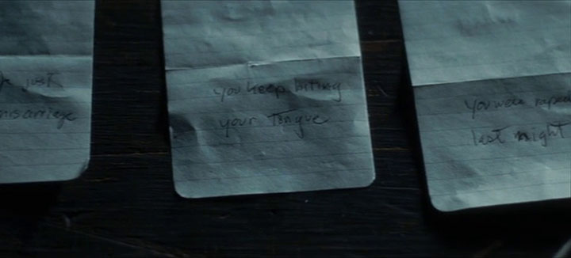
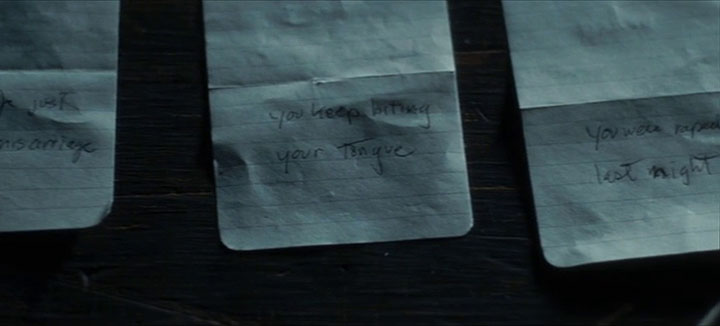

Introduction#
‘Script’ is a commonly used term within contemporary architectural design. Historically, it contains numerous meanings and implications central to architectural practice and methods, but today it is most commonly associated with a particular subset of computational design. This narrow definition belies the wealth of ideas that 'script' encompasses. This thesis presents my use of scripts as a mode of critical design research in examining a range of issues related to contemporary technology. Embracing the philosophy of the absurd, it examines a range of my design projects which each use different scripted methodologies, resulting in the creation of films, installations, computational code and performances.
The thesis consists of four chapters, an introduction and a conclusion. Each chapter presents a project, or pair of projects, which exemplify a different aspect of my practice, and mode of scripting. These range from behavioural scripts, to computational scripts, performance scripts, and finally, script as a mode of instruction in a design process. The thesis contains two direct contributions to knowledge. The first is a novel mode of physically navigating a three-dimensional vector database via a human-machine interface, which is described in chapter 2. The second is a novel design methodology, called ‘Reflexive Scripted Design’, which was used to produce a film in chapter 4. The overall aim of this thesis is to reframe the term script within architectural discourse; to open the term up to debate, and embrace the numerous complimentary and contradictory ideas it contains. Reflexive Scripted Design is the most material manifestation of this aim.
This introduction will outline the theoretical and methodological basis for the thesis. The first part provides an overview of the contextual framework for the research. It begins by examining the development of the term script in computational, architectural, psychological and literary disciplines, aiming to reveal the varied, yet interrelated, semantic and functional uses of the term within these different fields. The chapter then goes on to outline three definitions of the term script, which will form the core methodology for production of works described in this thesis – computational script, performance script, and reflexive scripted design – with a brief explanation of where each type can be found. This section will conclude with an analysis of another related field of research that is integral to the thesis: technology and the philosophical absurd. The next section details the design methodology underpinning the work, beginning with the description of two key ideas – the absurd machine and the diagram – before moving on to a description of the modes of practice, and personal assessment criteria for design work. The introduction concludes with chapter summaries and a brief description of the works discussed.
Contexts#
Computer scripts#
The term ‘scripting’ in computation derives from its directive function. As a 1962 Fortran1 computer programming manual explains: ‘A programme for a computer is like a set of instructions for a clerk who is running a desk calculator. We can tell the calculator clerk what to do with some numbers without saying what the particular numbers are.’2 As this quotation implies, programming in computing involves the production of routine, procedural instructions based on binary logic. The actions of the computer are dependent on the legibility of specific symbols, usually inconsistent or incompatible with human language conventions. As a mode of programming, scripting is predicated on this idiosyncratic binary process, yet its function and modus operandi is distinct from programming in terms of its legibility and its dependency on a pre-existing language. As Ousterhout argued in 1998:
Scripting languages are designed for different tasks than are system programming languages, and this leads to fundamental differences in the languages. System programming languages were designed for building data structures and algorithms from scratch, starting from the most primitive computer elements such as words of memory. In contrast, scripting languages are designed for gluing: They assume the existence of a set of powerful components and are intended primarily for connecting components. System programming languages are strongly typed to help manage complexity, while scripting languages are typeless to simplify connections among components and provide rapid application development. Scripting languages and system programming languages are complementary, and most major computing platforms since the 1960s have included both kinds of languages.3
Where programming languages employ a low level of abstraction from the computer’s instruction set, scripting languages are much more abstracted.4 This means that they are typically written in language that is easier for a non-programmer to understand; for example, there is no need for them to have to manually address memory operations. Scripting languages are useful for a variety of repetitive functions, such as renaming files, and often make use of conditional devices such as: if and for statements, clear binary logic, and rules. Ousterhout calls scripting languages ‘glue languages or system integration languages.’5 Put simply, most tasks that a computer script performs could be performed by a human, given enough time (an idea explored with the project Nybble, described in Chapter 2).
Written at the height of the dot-com bubble, Ousterhout’s predictions that the increased prevalence of ‘gluing tasks’ would make scripting ‘an increasingly important programming paradigm in the next century’ have been largely proven correct.6 Several of the main languages used in contemporary web programming, such as Python (the language the original Google crawler was written in), Perl, Ruby and JavaScript are scripting languages, and use libraries of pre-existing code to speed up programmers’ ability to implement functions and build higher-level programming.7 Google’s TensorFlow – an open source machine-learning toolkit – is controlled via Python.8 As Autodesk (commercial CAD software company) product manager McCullough said: ‘No need to learn how to link headers or throw exceptions. This kind of code is by you, for you – and it is fun.’9
The distinction made by Ousterhout positions scripting as a mediating layer between human language and pure computer-programming language; it implies that scripting is therefore removed from the original programming language, but still reliant upon it. Despite the fact that the term ‘scripting’ has been in common usage since the late-1970s, some contemporary critics – predominantly ‘purist’ programmers – dispute the validity of the distinction due to the dependency of scripting on the original programming language: programming is the essential language-form, which aims to optimise the function of a computer via the minimum amount of instructions that are necessary; whereas scripting is a derivative activity, which adapts the existing language framework to enable easier user-intervention, yet in doing so corrupts the purity of the language.10
On the one hand, the definition of ‘script’ implied here – as a subordinate and derivative – deviates substantially from the etymological associations of the word ‘script’ with its Latin root scribere: ‘to scratch, engrave, draw’.11 Here the term implies intentionality and has subsequently become connected with the concept of one’s own script, or handwriting, which bears an intimate connection to the person who wrote it, which clearly deviates from the idea of computational scripting as inauthentic. This would imply that programming is in fact closer to the common interpretation of the word scripting. Yet it could also be argued that computational ‘scripting’ is closer to the etymological root of the word than ‘programming’, by virtue of its inauthenticity. To write, or script, is not to create the language, necessarily, but rather to assemble, arrange, copy and repeat its elements in order to communicate an idea to the reader. The ‘scribe’, for example is ‘one whose business is writing’, and historically has been charged with ‘interpreting’ or ‘transcribing’ existing words, speech and language.12 In Jewish history scribes were professional interpreters of the law, and in Biblical history, documenters (and upholders) of ceremonial tradition. Yet whilst associated with education and prestige, the role of the scribe also inferred a certain lack of decision-making power, as exemplified in the Bible verse Matthew 7:29: ‘For he taught them having authority, and not as the scribes.’13 In computation, ‘scripting’ manipulates and transcribes a pre-existing programming language to communicate instructions to the computer and ultimately, by virtue of the ‘copy-and-paste’ approach used in scripting languages, to the user. As such, like the cultural use of the term scripting, it emphasises the act of copying and arranging more than the act of creation.
This notion of computational scripting therefore brings up a multitude of questions regarding the issue of agency and authenticity: it is a set of instructions that the computer must follow sequentially and unquestioningly based on a binary logic;14 it can draw upon pre-existing bodies of work, external sets of instructions, data sources or even programming languages; it has dependencies and requires the frame of its parent language to compile; and it can be used at multiple levels of abstraction (a script may call on another script, which may call on another, and so on). The question of authorship in computational scripting that these characteristics raise has become particularly contested in the domain of architecture, since the emergence of script-based design strategies in recent years (discussed below), where a conversation around the creative agency and responsibility of the architect has been called up for debate. Yet as in computation, the term ‘script’ in architecture embodies semantic ambiguities, due to its changing use and association throughout history.
‘Scripting’ in the architectural context#
The earliest usage of the term script, according to Oxford English Dictionary (OED) was c.1374, in Geoffrey Chaucer’s epic poem Troilus and Criseyde.15 The term originates from the Old French escrit,16 which is derived from the Latin base of scriptum: ‘something drawn, a space enclosed by lines’, a derivation of scribere (‘to scratch, engrave, draw’, whereby ‘scratching refers to engraving onto wax tablets’).17 Such definitions imply that scripting might be used interchangeably with the word drawing. The motion of scratching onto a wax surface, for example, implies a sense of movement, gesture and authorial intent: the movement of an individual person’s hand in a deliberate manner, in the knowledge that those movements will be recorded. Similarly, ‘a space enclosed by lines’ inherently conjures the practice of pictorial representation. In this sense, the relevance of the term for architecture is obvious. However, another linked definition of the term has more ambiguous, but no less interesting resonances with architectural production: ‘to write, to draw, or otherwise make lines, letters, figures, etc.’18 This definition of ‘scripting’, which equates drawing with the practice of ‘making lines, letters, figures, etc.’ arguably makes ‘scripting’ a useful word for describing the composite act of architectural design, which makes use of images, words and figures in equal measure.
Whilst drawing is the mode of representation and communication most readily associated with architecture, in recent years architectural historians have highlighted the importance of language – the written and spoken script – as a central part of design. Adrian Forty’s book Words and Buildings: A Vocabulary of Modern Architecture, examines the role that language has played in the development of modern architectural ideas.19 In the chapter ‘Language and Drawing’, Forty questions the idea that the drawing is the most efficient and significant mode of communication for architects by outlining the co-dependency of drawing and language throughout the design process:
…the client tells the architect what is wanted; the architect does not only draw the building, he or she describes it, variously, to the client, to other architects, to regulatory authorities, to the contractor, to the tradesmen, to the press; and even the encounter with a work of architecture, its occupation, it itself rarely a wholly non-verbal affair (“No, that’s the fire exit – the main entrance is over here…”).20
Forty goes on to argue that these processes are necessarily of equal significance as the written word is able to convey certain aspects of information or meaning that the drawing cannot, that are crucial to the design process, such as the communication of vague ideas like ‘nuances, moods, atmosphere’, the expression of difference, and the conveyance of meaning.21 In a similar vein, Mario Carpo’s books Architecture in the Age of Printing and The Alphabet and the Algorithm, trace the multifaceted means by which architecture is produced, from the writing and plans of Italian Renaissance architect Leon Battista Alberti, through the ages of mechanical printing, to the algorithms within contemporary parametric architectural design.22 The focus of much of Carpo’s work relates to the technological shifts in architectural design.
Forty and Carpo are agreed on one premise: for most of history, architectural drawings, as we know them today, were not privileged as the primary design tool or communication device. Forty states: ‘In previous periods of history, antiquity and the Middle Ages, drawings played little or no part in the production of buildings.’23 Carpo agrees: ‘Before the invention of print, manual copies of drawings were famously untrustworthy, and as a result, images were seldom used, or altogether avoided.’24 As a result, most architectural descriptions ‘from antiquity to the Middle Ages to the Renaissance’ were ‘verbal, not visual.’25 Even Leon Battista Alberti’s celebrated treatise, was intended to be transcribed ‘without any images or illustrations.’26 Carpo argues that one reason for the emphasis on language over drawing was the unreliability of image reproduction prior to the widespread availability of printing technology:
Copying [^images] by hand, regardless of the motivations of the artist and his desire to remain more or less faithful to the model, is always to some extent a creative act. With few exceptions, a manual copy is executed outside the control of the author of the original design, sometimes at a great geographical or chronological distance, and with aims that may be different from those that were initially anticipated.27
Thus Carpo raises the question of authorship in relation to the act of copying (although, here with images rather than text). If images could not be stored for long periods, or copied accurately, how might they be encoded so that a copy had maximum accuracy? The answer, according to Carpo, is procedural instruction. Ptolemy, for example, used written instructions for the creation of Geography, or Cosmology.28 Carpo describes Vitruvius’ instructions in De Architectura as a ‘procedural algorithm’,29 a set of instructions, which could be followed in exact order to recreate illustrations.30 Alberti (the central actor in of much of Carpo’s research) took the procedural instruction further, creating a system which enabled the digitisation of a three-dimensional structure. Within De statua, Alberti proposed using a special radial measurement device ‘somehow inconveniently nailed to the head of the body to be scanned’,31 capable of taking distance measurements (presumably in two directions, with a rotational angle). The measurements would be recorded in some sort of table, which would then be used to enable the original form to be stored and reproduced in perpetuity, with no loss of quality.32 The system adds a third dimension to the system already described in Alberti’s famous survey of Rome, Descriptio Urbis Romæ, which contained a similar polar coordinate system with a table of numerical data to enable a reader to construct their own map of the city. This is not far from the idea of computational scripting discussed earlier, with the map’s ‘scribe’ following the instructions in the ‘script’ laid out by Alberti.33
The connection between this particular mode of procedural instruction, and computerised architectural scripting, was demonstrated in a more complex manner in the work of Nicholas Negroponte at MIT in the 1960s.34 Negroponte’s undergraduate thesis entitled The computer simulation of perception during motion in the urban environment (1966) described a procedural programme enabling a computer to simulate moving objects, rendered in perspective.35 The programme operated procedurally via dual sets of constraints: one ‘external’ set loaded onto the computer as an ‘explicit or implicit library of information’ (for example, a library may contain building codes, or construction standards), and one ‘internal’ set of constraints:36
The drawing routine possesses the flexibility to enable the designer to call for ‘rules’ of procedure. For example: “lines must be straight; lines are parallel or perpendicular to the 'drawing surface'; all lines meet at 90º; all rotations of the image are 90º.” Such constraints allow the designer freedom to sketch 'loosely', while maintaining an accurate drawing.
If the designer self-imposes, for example, the constraint that that “all lines meet at 90º”, and proceeds to draw a line that meets at 80º, the computer will force the line to 'wander' into the correct position.37
This use of libraries and higher-level language to define a set of parameters within which the programme can operate is reminiscent of Ousterhout’s later description of scripting languages (which would come 32 years later).38 Explicit reference to scripting within a computer system, however, emerged in Craig Reynolds’ 1978 masters thesis (self-described as a ‘computer system user’s manual posing as a Master’s thesis’39) on Computer Animation in the World of Actors and Scripts.40 Supervised by Negroponte (who was, by this time, the founder of the Architecture Machines Group), the thesis is rich in theatrical analogy, employing the terms ‘actor’, ‘script’, and more.41 Reynolds, who would go on to win an Oscar for animation work, identified that, whilst animation requires skill, it also involves much tedium.42 The solution he proposes is computer automation of the animation process. But rather than merely in-filling between keyframes, Reynolds’ programme creates entire scenes based on the input of a script. A level of control is ceded to the computer – but the payoff is that the creation of scripts is easy and unintrusive: ‘you could do it at the beach for example.’43
Reynolds’ thesis proposes the script as a set of parameters within which a programme can operate. It sets the boundaries and goals of the programme’s operations – the script-writer merely tells the computer what they want it to do, and lets the programme work out the best way to solve it. The parameters are adjustable, but the computer ultimately makes decisions about the best way to implement the programme and create the animation. For Reynolds, the script analogy carries into much of his writing. Like a real-world theatrical performance, the performance (and the various actors and crew who will carry out the performance) are separate from the writer, director, or choreographer, to the extent that: ‘[...] on the night of the performance the choreographer (for example) could just as well be in another city.’44 The script is separate from the computer carrying out its instructions, much in the way that scribes who translate Alberti’s maps today are removed geographically and temporally from the script-writer. Given such vague instructions, the computer can ostensibly make decisions that affect the designed outcome. Of course, this raises questions about the role of authorship ascribed to the script-writer, the programme, its programmer, and the computer.
Similar questions are raised by Forty in his examination of the 1960s architectural collective Archizoom, who proposed a scheme with only a verbal description. Testing a notion that ‘architecture might be projected not in drawings at all, but entirely in words’, the group laid out a description of a design that was deliberately vague:45
[...] everything will be simple, with no mysteries and nothing soul-disturbing, you know. Wonderful! Really very beautiful – very beautiful, and very large. Quite extraordinary! It will be cool there too, with an immense silence. [...] You see, there 'll be a lot of marvellous things, and yet it will look almost empty, it will be so big and so beautiful.46
The scheme, notes Forty, contains ‘contains no particulars - no mention of what the space was for, whether 'house', 'office', 'library' or 'bar', and nothing about it physical delineation.’47 The description of the house, then, serves as a mode of instruction, albeit vague, for an architect to interpret. It gives similar levels of leniency to the architect as a playwright gives to a director producing a play:
What we use, then, in creating our environment is the least physical thing in the world, namely, words. Of course, that doesn't at all mean that in postponing the physical realization of this environment, we have avoided picturing it. On the contrary, we have refused to complete a single image, our own, preferring instead that as many should be created as there are people listening to this tale, who will imagine this environment for themselves, quite beyond our control.48
This idea is similar to that of the Oulipo: where Raymond Queneau’s Cent mille milliards de poèmes (which will be discussed later in this chapter) provides the framework for a number of poems too great for any one person to read, this Archizoom scheme provides an infinity of possibilities, with the design morphing each time it is interpreted by a designer. This is distinct, however, from Reynolds’ software, which allowed for certain parameters (e.g. timescale, particular movements of objects) to be controlled by the designer; the Archizoom scheme fails to mention a project site, scale, budget, or any other material constraints. The Archizoom scheme is provocative, but vague; the instructional script provided to a designer provides few limits.
Computerised architectural scripts#
Whilst Archizoom follow vague constraints, Nicholas Negroponte’s first major published work, The Architecture Machine, contains an explicit aim to change the means by which architects produce work.49 Its ‘Preface to a Preface’ explains the ‘three possible ways in which machines can assist the design process:’ the first is by increasing efficiency for existing practices via automation; the second is by changing existing methods to fit machine-specifications, whereby ‘the design process, considered as evolutionary, can be presented to a machine, also considered as evolutionary, and a mutual training, resilience and growth can be developed’;50 the third mode of assistance, which is the focus of Negroponte’s work, is by uniting:
[...] two dissimilar species (man and machine), two dissimilar processes (design and computation), and two intelligent systems (the architect and the architecture machine). By virtue of ascribing intelligence to an artefact or the artificial, the partnership is not one of master and slave but rather of two associates that have a potential and a desire for self-improvement.51
This ‘Architect-Machine Symbiosis’ (itself the title of chapter 001), whereby the computer is imbued with a level of ‘intelligence’, and the architect works with rather than on the machine to solve problems, is Negroponte’s ultimate goal. In The Architecture Machine he describes variously using this sort of interdependent design process to model myriad systems, such as traffic prediction, forensic event analysis, 3D animation, and more.52 Much of Negroponte’s description mirrors Reynolds’ notions of scripting as natural-language processing, which generates results that the designer then decides either to keep, or to modify via a further scripting procedure. Several of these ideas have been integrated into contemporary architectural design practice in recent years, including Building Information Modelling (BIM) software, which enables the modelling and management of multiple systems within the design and construction of buildings, giving architects real-time or near-real-time feedback on the systems they are designing.53
Parametric design processes, such as BIM, are now pervasive in architectural practice and education. Computer programmes like Grasshopper, itself a built-in extension of McNeel’s Rhinoceros 3d (Rhino) design programme, provide an interface that enables the computer scripting of components’ forms and relationships.54 Using this interface, the designer programmes ‘parameters’ within which the computer is to solve a particular geometric problem. 55 In the case of Grasshopper, the interface for such programming acts as a layer on top of a standard Computer Aided Design (CAD) interface, comprising a series of nodal points, connected to each other via ‘wires’, each consisting of controls for objects and their respective connections within the 3D model.56 The most basic form of such a parametric model might consist of two points in space connected via a line, with each point defined by their position on the X, Y and Z axes. By adjusting the position of sliders for each of these six parameters, the length, position and angle of the line can be manipulated. A more advanced model could then position further sets of points or lines in relation to the first pair, so that changing the parameters of the first line would cause changes to a series of subsequent lines. Complex geometric relationships can be defined with relative ease through such scripting; a few lines of code may create an assemblage with thousands of inter-related parts.
Grasshopper is a true scripting language as described by Ousterhout, as it can make use of myriad plug-ins or libraries to extend its functionality (it is fundamentally reliant on the RhinoScript programming language for the Rhinoceros). Such libraries vary in scope: some enable programming of particular forms or solve particular problems (for example, a module that enables parametric design of standard elements) whilst others add the ability to connect microprocessors such as Arduino boards, giving Grasshopper a physical input or output. A recent library created by ElAshary and Glynn at the Bartlett School of Architecture’s Interactive Architecture Lab facilitates the control of industrial robots;57 Heumann’s MetaHopper extension enables the parametric design of Grasshopper nodes, controlling Grasshopper via Grasshopper.58
The use of parametric design is becoming increasingly pervasive among architecture practices. Malcolm McCullough claims that there have been certain contextual factors which have increased the uptake in computer scripting as part of the design process, including the development of the programmes which enabled scripting to take place, fuelled by advances in mathematics or software, and the promotion of computers within design by educators such as John Maeda.59 The practical appeal of parametric design is twofold: on the one hand, it increases productivity by embedding a form of intelligence into the architectural drawing process, facilitating faster compilation of plans through, for example, the application of standardised components and processes – as predicted by Negroponte. On the other hand, computer scripting also extends the form-generating capabilities of existing and new software, enabling the construction of buildings with unprecedented stylistic and formal properties, with architects such as Greg Lynn, Achim Menges and Patrick Schumacher, as early experimenters of the latter in the 1990s.60
This form-driven use of parametric design has gave rise to a new genre of practice in the 2000s known as ‘Parametricism’, a term coined by Patrik Schumacher in 2008.61 For Schumacher, scripting presented the opportunity to revolutionise architectural practice via a holistic design process whereby architectural forms are produced by the codified manipulation of parameters, rather than the manual conception of every detail; the computer script, rather than the architect’s hand, determines the formal outcome at every scale.62 But Schumacher’s approach extends beyond parametric design as a mere design tool; initially positioning parametricism as a successor to, and replacement for, all contemporary architectural styles, his later arguments pose the notions of parametricism as highly politicised form of free-market order which would have wide-ranging impacts on notions of public space, private property, and social housing.63 In his 2009 manifesto, entitled ‘A New Global Style’, the architect argues that this scripted approach ‘succeeds Modernism as the next long wave of systematic innovation’, replacing Corbusier’s ‘rigid geometric primitives such as squares, triangles and circles’ with forms are ‘parametrically malleable, differentiate gradually (at varying rates), inflect and correlate systematically’.64 While Schumacher’s approach is undeniably progressive in technological terms, his conception of the design potential of scripting is limited to its role as a determinant of spatial-aesthetic characteristics.
Schumacher’s comparison of Parametricism with Modernism exposes the architect’s formalist concerns. Modernism is only rejected on the basis of the Corbusian veneration of the orthogonal, which is positioned as the antithesis of parametricism’s pursuit of complex forms and patterns. As Schumacher argues, beyond this formal distinction, the goals of the two architectural movements are the same:
Le Corbusier’s limitation is not his insistence upon order but rather his limited conception of order in terms of classical geometry [...].[^He] realised that although “nature presents itself to us as a chaos ... the spirit which animates Nature is a spirit of order”. However, while his understanding of nature's order was limited by the science of his day, we now have the tools to reveal the complex order of those apparently chaotic patterns by simulating their “material computation”.65
While, for Schumacher, the forms of modernism may be ‘primitive’ on account of a lack of scientific knowledge of natural systems at the moment of conception, the movement shared parametricism’s quest for ‘order’ via the implementation of universal design principles. Indeed, the notion of a totalising design methodology forms a core tenet of parametricism, which aims to operate at all scales ‘from architecture to interior design to large urban design. Indeed, the larger the project, the more pronounced is parametricism's superior capacity to articulate programmatic complexity.66 The key differential between modernism and parametricism, according to Schumacher, is thus not architectural determinism, or what Peg Rawes has described as ‘modernist myths of autonomy and innovation’, but rather, their respective definitions of ‘nature’.67 For Schumacher, the appeal of nature as the source of inspiration does not lie in its geometric simplicity (as for Corbusier), but rather in its complexity and intelligence.
Schumacher’s analogy between natural systems and artificial (computational) systems is, however, fundamentally reductive due to its emphasis on the formal (rather than relational) character of natural systems. As Rawes has noted in her critique of parametricism, Schumacher’s conception of nature in purely formalist terms (organics shapes and abstracted analogies of biological systems) obfuscates the complex and contingent relationships (or ‘ecologies’) between architecture, humans and the environment, at a time when thoughtful, responsible and sustainable design is critical. The emphasis on the formal rather than the relational aspects of nature, Rawes claims, draw ‘metaphorical alignments between digital code and biological DNA as evidence that architects have now been released from the limitations of human authorship in design processes.’68 Rawes argues that the removal of authorial agency (and by default, environmental and social responsibility) from the architect is reinforced by the professional and training environments within which parametricism is taught, namely ‘through intensive workshops which focus on repetition and emulation’ and by working in ‘hermetic teams or “labs”’ where employees rarely receive individual recognition or appropriate remuneration.69 Thus, Schumacher’s claims that the use of script within parametricism promotes a synergy between architectural/urban forms and the ‘natural’ (human) processes they accommodate is drastically undermined by the fact that it disregards the fundamental relational components of that system, be they social, political or environmental.
Schumacher’s limited definition, and use, of the concept of scripting in architectural design privileges abstracted computational complexity over real, socio-spatial complexity in the urban realm. This smooth, idealised version of complexity mimics, and complies with, neoliberal ideology, whereby the rhetoric of ‘self-organisation’ within the market, and the conflation of economic processes with natural systems, is key.70 This relationship between parametricism and neoliberalism is not accidental, but rather, fundamental to its success. As Schumacher himself noted in 2016:
Parametricism 2.0 makes urbanism and urban order compatible with the neo-liberal re-emergence of market processes after the demise of Modernism – the golden era of urbanism. [...] The global convergence and maturation of Parametricist design research implies that this style of urbanism is ready to go mainstream and impact the global built environment by re-establishing strong urban identities on the basis of its adaptive and evolutionary heuristics.71
While this thesis does not dispute the advantages of parametric techniques in contemporary design, whereby scripting is used as a tool in a wider design process, it does contend that the lack of authorial agency and emphasis on the autonomy of scripting as presented in Parametricism, and its attendant ideological argument, is highly problematic for three reasons: firstly, it reduces the scope of creativity in architectural practice to the purely formal, positioning the human, political and social aspects of design as elements that ‘that divert and dissolve the innovative thrust of architectural discourse’, rather than being central to it;72 secondly, it eradicates the critical involvement of the designer in the most important stages of the design process, as well as other crucial agents such as the user; thirdly, and perhaps most critically for this thesis, it limits the definition of ‘parameters’ in scripting to purely abstract, form-generating constraints, that are complicit within a neoliberal worldview of self-interest and self-determination, rather than socially-engaged, real-world constraints, that force the designer to challenge and even resist the dominant socioeconomic paradigm. In other words, Parametricist design represents a very limited notion of what scripting as a generative framework in architecture could be.73
Psychological scripts#
The relationship between agency, subjectivity, sociality and scripting has been explored more expansively in the field of psychology. Initial research in this area was triggered by the widespread interest in artificial intelligence in the 1970s, spearheaded by figures such as Marvin Minsky at MIT. In 1974, Minsky proposed a theory about the operation of knowledge structures, introducing the notion of ‘frames’ as ordering mechanisms for the mind.74 He summarised the idea as:
[...] a partial theory of thinking, combining a number of classical and modern concepts from psychology, linguistics, and AI. Whenever one encounters a new situation (or makes a substantial change in one’s viewpoint) he selects from memory a structure called a frame; a remembered framework to be adapted to fit reality by changing details as necessary.75
In the paper, Minsky cites Roger Schank and Robert Abelson as both having similar, but distinct ideas about this model of thought, at the time described as ‘conceptual cases’ by Schank, and ‘scripts’ by Abelson’s.76 Schank and Abelson worked on this area independently and collaboratively, publishing a book in 1977 entitled Scripts Plans Goals and Understanding: An inquiry into human knowledge structures,77 based on what they claimed were questions shared by psychologists and artificial intelligence researchers. Schank and Abelson explain that whilst psychologists were asking: ‘What the is nature of all knowledge and how is this knowledge used?’,78 artificial intelligence researchers were asking similar questions, but with the motive of programming computers to ‘understand and interact with the outside world’.79 Using this line of enquiry, the book takes sets up a framework for the application of script theory to computer programming. At around the same time (or shortly thereafter), the psychologist Sillvan Tomkins published his own version of script theory, which was rooted in psychology. Both books adopt a similar underlying premise and, remarkably, a similar title. Here I will briefly examine both.
Sillvan Tomkins’ script theory#
Tomkins research was based on the investigation of psychological affect – the study of emotions, and reactions to emotions. His use of script theory was part of a larger set of interrelated theories developed throughout his lifetime, referred to by Rae Carlson as a ‘grand theory of personality’.80 Tomkins’ script theory starts with a premise which:
[...] assumes that the basic unit of analysis for understanding persons, as distinguished from human beings, is the scene and relationships between scenes, as ordered by sets of rules I have defined as scripts.
Some scripts are innate, but most are innate and learned. The learned scripts originate in innate scripts but characteristically radically transform the simpler, innate script.81
The first witnessed innate script is the ‘birth distress cry’, stimulated, at the time, by a ‘slap on the behind’, and accompanied by a baby’s ‘flailing arms and limbs’.82 The second innate script is the ‘excitement-driven visual tracking of the utterly novel face of the mother.’83 Babies then begin to correlate their behaviour (the actions and the responses they create) with the stimulus they are given in the world, which Tomkins calls a scene, developing sets of rules known as scripts to react to situations. An example of this is the baby experiencing hunger, and learning the appropriate response to this feeling in order to be given food.
Throughout peoples’ lives, the theory continues, they develop more rules to follow in reaction to the scenes they find themselves in. An interesting detail in Tomkins’ description of scripts is their potential vagueness:
Scripts may vary radically in their completeness of specification of rules or in their particularity or abstractness of rules, as well as in an indefinitely large number of other possible distinctive features of rules for dealing with scenes. All scripts are incomplete in varying degrees and depend on auxiliary information to particularise the script. What is distinctive about innate scripts is not the incompleteness and abstractness of their rules, but rather the imposed identity and similarity of their strict correlation between stimulus and response.84
The indistinct, non-binary nature of script rules is then useful in categorising scenes into groups called sets – for example, sets of exciting scenes, surprise scenes, distressing scenes, enraging scenes, disgusting scenes, and so on.85 An individual’s reaction to certain environmental stimuli may lead to the categorisation of a scene, and the triggering of a certain script in response (as is the case with such as the guilt, or shame-inducing scenes).86 Scripts are activated both in response to an immediate scene (experiencing and reacting to an immediate stimulus), and dealing with sets of scenes. Co-assembled scenes, which can include real-world experience, as well as projections of future scenes, are ‘amplified by fresh affect’.87 This means that, by experiencing a scene (real or imagined), the script for experiencing similar scenes may be altered. This is a mechanism Tomkins calls magnification.88
The effects of magnification and amplification come into play very early in human development. For example, babies learn to react to their experience of hunger on their first day. As well as learning a script which scripts are successful for gaining food, babies can also mis-learn behaviour that is detrimental to nutrition through the vagueness of magnification whereby the outcome, and its affect (i.e. the internal emotional reaction to a stimulus), is ascribed to one’s own script – often incorrectly. Tomkins’ use of scripts expands the theatrical metaphor to deal with life as a whole:
In my script theory, the scene, a happening with a perceived beginning and end, is the basic unit of analysis. The whole connected set of scenes lived in sequence is called the plot of a life. The script, in contrast, does not deal with all the scenes or the plot of a life, but rather with the individual's rules for predicting, interpreting, responding to, and controlling a magnified set of scenes.89
This theory then enables the development of scripts that are useful (for example, a script allows us to negate the real danger of crossing the road on a daily basis), as well as causing larger-scale, longer-term, and often cyclical effects on behaviour – such as scripts resulting in addictions. Tomkins describes affect scripts which regulate ‘control, management, and salience of affect’, creating sets of rules that shape individual emotional reactions to certain stimuli. 90 Tomkins’ formulation of scripts encompasses multiple short, and long-term effects on individual psychology, offering a mode of describing seemingly irrational rules that determine individual behaviours and ideologies.91 His work on ideology, which builds on his script theory, follows a similar logic to the relationship between script and affect; the magnification of affect in response to other human beings over time leads to ideological polarisation, between the ‘ideological humanist’ (‘positively disposed towards human beings in his displayed affect, in his perceptions and in his cognitions’) and the ‘ideological normative’ (‘negatively disposed towards human beings in his displayed affect, in his perceptions and in his cognitions’).92
Such ideas are relevant within the context of this thesis because they pose questions about human agency and innate internal scripts. Simultaneously, Tomkins’ scripts offer a mode of consciously analysing (and changing) human behaviour, through the realisation that the seemingly abstract, irrational and unforeseen forces within the human psyche are often caused by amplification mechanisms, which reinforce certain scripts, changing individuals’ behaviours and emotional responses.93 The concept of the irrational as a controlling force has parallels in the work of the Theatre of the Absurd (which features later in this chapter).
Besides psychology, Tomkins also had an interest in artificial intelligence. Inspired by Norbert Weiner’s early work in cybernetics,94 Tomkins’ attempts to design a ‘humanoautomaton’ led to writing of a 1963 book entitled Computer Simulation of Personality.95 This, and research into ideology, were common grounds with Robert Abelson, who in the mid-1970s began working with artificial intelligence researcher Roger Schank on what they would come to call Script Theory; a different, but related, approach to Tomkins.96
Schank and Abelson’s script theory#
In contrast to Tomkins approach, Schank and Abelson’s script theory is concerned with modelling knowledge structures in relation to artificial intelligence.97 The pair met in 1971 (three years before Minsky published his article citing them both) at a workshop on psychology, artificial intelligence, and linguistics.98 This cross-disciplinary approach continued into their collaboration on Scripts, plans, goals and understanding, in which Schank and Abelson focus on text-based events, and describe the basis for computer programmes and modes of interpreting, understanding and predicting behaviour.99 They state that certain psychologists, in asking the question about the nature of knowledge and the way it is used, ‘have found it useful to view people as “information processors” actively trying to extract sense from the continual flow of information in the complicated world around them.’100 The book relates to ‘psychological and physical events occupying the mental life of ordinary individuals, which can be understood and expressed in ordinary language.’101 Thus, their work can be applied to computer systems. Most of their examples take the form of short paragraphs which an ‘ordinary’ person could understand and make inferences from, but a computer would not.102
Like Tomkins, Schank and Abelson see the world as a series of discrete events called scenes. Scenes are data structures which allow for generalised inferences to be reached about likely event ordering within predictable environments. As Abelson explains: ‘The understander is hypothesized to possess conceptual representations of stereotyped event sequences, and these scripts are activated when the understander can expect events in the sequence to occur in the text.’103 The primary example of a scene, referred to multiple times across Schank and Abelson’s joint and individual work on the subject, is the restaurant scene. A restaurant is a highly codified space in which people have clear roles (such as waiters and patrons), and events occur in a predictable order (such as ordering, serving, eating, paying the bill). The situation requires two kinds of knowledge to navigate: general knowledge, enabling a person to ‘understand and interpret another person’s actions simply because the other person is a human being with certain standard needs who lives in a world which has certain standard methods of getting those needs fulfilled’, and specific detailed knowledge, which enables the individual to ‘do less processing and wondering about frequently experienced events.’104 This kind of knowledge ensures that, for example, we know to order food rather than shoes in a restaurant, or to hand an usher our ticket when asked for it in a cinema.105 Thus, with fragmentary information, we can describe and imply a high level of detail:
John went to the restaurant. He asked the waitress for coq au vin. He paid the check and left.106
In reading the above scene, the reader is able to deduce exactly what has happened, filling in much of the information based on our own collated experiences in restaurants.
There are numerous other ‘frequently occurring scripts’ like this (the authors cite being on the street, a bus, at a birthday party, playing specific sports and going to a park, among others).107 Schank and Abelson apply codification to scripts, examining dynamics of a scene, and creating what they call a ‘giant causal chain’.108 The causal chain within the ordering scene of the restaurant script has 14 different actions:
| Symbol | Represents |
|---|---|
S |
waiter |
F |
food |
C |
cook |
MTRANS |
mental transfer, or telling |
PTRANS |
physical transfer, or the moving of an object or person |
ATRANS |
abstract transfer, or the giving of an object from someone to someone else |
MBUILD |
thinking (roughly speaking) |
| Sequence of events | Action |
|---|---|
S MTRANS signal to W |
|
W PTRANS W to table |
S asks for the menu |
W PTRANS W to menu |
|
W ATRANS menu to W |
|
W PTRANS W to table |
W brings the menu |
W ATRANS menu to S |
|
S MTRANS food list to mind |
|
S MBUILD choice of Food F |
S decides what to order |
S MTRANS signal to W |
|
W PTRANS W to table |
|
S MTRANS "I want F" to W |
S tells W |
W PTRANS W to C |
|
W MTRANS (ATRANS F) to C |
W tells C |
C DO (prepare F script) |
As exemplified in Table 1-1, this script contains Schank and Abelsons’ codified actions (MTRANS / PTRANS / ATRANS / MBUILD), written in language developed by Schank called Conceptual Dependency.109 One interesting feature of this language is MBUILD: described as ‘roughly equivalent to thinking’, or as simply ‘now think’, this implies a level of decision-making on behalf of the participant, rather than a total automaticity.110 Abelson explains that whilst ordering food can become habituated, the MBUILD unit found in most scripts implies the individual has a level of agency.
Scripts themselves can have variants, which are called tracks. Whilst the script contains common themes (e.g. a waiter or server in a restaurant), each track contains ‘characteristic paths, scene selections, and props not shared by other tracks’.111 For example, there may be several tracks for the restaurant script: ‘a fast-food track, a standard-restaurant track, a fancy-restaurant track’, and so on.112 This enables a certain level of efficiency in the storage of scripts. Abelson also describes meta-scripts, which abstract scenes at a higher level than a standard script, efficiently grouping similar activities. A visit to the doctor and the dentist are similar, yet distinct scripts; in one, a nurse may take blood pressure, and the other X-rays, but both generally involve a waiting room.113 But the efficiency of the script model of knowledge can also be detrimental, leading to false recollection of memories. Bower, Black and Turner found that in factual recall of written stories, participants in experiments are subject to elaborating explicitly stated actions with the stereotypical components of scripts;114 participants also tended to recall scrambled events in the ‘canonical’ (or script-normative) order. Furthermore, García-Bajos and Migueles found that these false memories of events, ‘generated by activating our prior knowledge’ and subsequently elaborated with standard script-elements, have a high recall-confidence in the opinions of the subjects:115 false memories generated in this manner have a high persistency (remaining consistent for at least a week) and are ‘resistant even to explicit instructions warning against such errors.’116 This aspect of Schank and Abelson’s script theory is perhaps one of its most interesting features.
Scripts, in the Schank and Abelsonian sense, are fascinating knowledge structures, providing individuals with codified routines for carrying out standard social interactions. Embedded within these are moments of physical, mental or abstract (possessive) transfers, and explicit moments for decision-making.117 However, the efficiency of these knowledge structures is also a potential weakness when it comes to recall of incomplete information that may be confabulated via standardised scripts.118 This is perhaps similar to Marvin Minsky’s concept of frames in artificial intelligence;119 the frame is a more generalised, stereotyped situation that an individual can find themselves in.120 The subject of frame in artificial intelligence, however, is beyond the scope of this thesis.
Scripting in creative practice#
The term script presents multiple potentials for agency: from the faithful scribe or computer copying without question, to the architect working within scripted parameters, to the human operating within their own scripted psychological environments, for whom scripting is both an efficient model of knowledge, but can also lead to strange affect (in the case of Tomkins, who observes a lack of rationality within human decision-making) and potential memory manipulation (as exemplified by Bower et al, and García-Bajos and Migueles).121 These examples imply a limitation of agency via the medium of scripting. Yet in the theatrical and literary context – a context perhaps most obviously associated with scripting, the term implies absolute freedom and creativity. This section explores the critical possibilities for the term scripting opened up within the creative literary field, through exploration of the Theatre of the Absurd, the Oulipo and Italo Calvino.
These playwrights / movements are linked by their exploration of the ‘absurd’ as a creative framework for societal critique, which highlights and indeed perpetuates a general feeling of lack of agency among the characters in the work as a way to critique it. Here the script operates as a constraint that generates creativity, whilst the ‘absurd’ acts as a strategy to unravel the use of psychological scripts (the things we say and do without thinking, our automatic existence) in our everyday lives. Thus there is an entanglement between the form of the work, and the content. The strategies used by these absurdist writers have been inspirational in my own practice as a critique of contemporary technology. Thus their role within this thesis is to offer an alternative model of scripting (what I call ‘reflexive scripted design’, as described later in the next section on ‘definitions’), which embraces the creative potential of script, whilst also remaining critical of it.
Theatre of the Absurd#
The Theatre of the Absurd was a literary and theatrical genre, first identified by Martin Esslin in 1960, and described in detail in a book of the same name in 1968.122 Esslin identified stylistic and thematic convergence in the plays of writers such as Samuel Beckett, Eugene Ionesco, Jean Genet, and Harold Pinter in the late-1950s and early-1960s, although the Theatre of the Absurd was never a formal ‘school’, or rooted in any one place,123 and was even rejected by many writers it claimed to encompass.124 Esslin traces the origins of the Theatre of the Absurd plays back to antiquity (through Shakespeare’s tragicomedies, Alfred Jarry, Franz Kafka, Søren Kirkegaard and more), yet claims that the density of works produced in the 1950s onwards and their similarities of subject matter and form – such as Eugene Ionesco’s The Bald Soprano and Samuel Beckett’s Waiting for Godot – heralded a new theatrical movement.125
The term ‘absurd’ has multiple meanings, all of which contain similar notions, but carry different implications. For the purposes of clarity in this thesis, I will distinguish between the two types whenever the term is written, calling them absurda and absurdb (and occasionally absurda+b).126
Absurda is the more commonly-used adjective form of the word, as defined by the OED as: ‘Out of harmony with reason or propriety; incongruous, unreasonable, illogical. In modern use esp. plainly opposed to reason, and hence, ridiculous, silly.’127 This can refer to both people and things; it is the illogical, ridiculous absurd. In general terms, this is the type of absurdity that can be immediately recognised in this section of Samuel Beckett’s play Waiting for Godot:
VLADIMIR: I don’t understand. ESTRAGON: Use your intelligence, can’t you? [^VLADIMIR uses his intelligence] VLADIMIR: I remain in the dark.128
The exchange is absurda due to its nonsensical stage direction (directing an actor to ‘use his intelligence’). Waiting for Godot is full of the ridiculous absurda – ludicrous logic, non-sequiturs, slapstick gags, and vaudeville stage directions. This form of absurdity is easily identifiable, with lighter philosophical implications than absurdb.
Cut off from his religious, metaphysical and transcendental roost, man is lost; all of his actions become senseless, absurd, useless.’129 Esslin (and the OED) cite this definition of absurd as having originated with Albert Camus, Algerian-born French novelist, philosopher and playwright who in 1957 won the Nobel Prize for literature for ‘his important literary production which with clear-sighted earnestness illuminated the problems of the human conscience in our times.’130 Camus’ definition of the absurd was introduced and discussed in the four essays published collectively as The Myth of Sisyphus. The noun ‘absurd’ (referred to here as absurdb), often capitalised and prefixed with the, refers to ‘the chaotic and purposeless nature of the universe, and the futility of human attempts to make sense of it.’131
The book, Camus states, is a reaction to ‘an absurd sensitivity that can be found widespread in the age.’132 At the time of publishing (1942), Camus was living in a Paris under German occupation during WWII. An avowed member of the French Resistance, it is not hard to see how his personal experience at the time might have influenced his thinking in relation to the futility of human existence. The book is written from a highly subjective point of view; in essence, Camus’ absurdb is about the individual realising of the disharmonic and illogical nature of the world, and the individual human’s frailty and insignificance within it.
Camus’ descriptions of the absurdb are innately theatrical and performative, and offer a rich language of spatial visualisations. A section entitled ‘Absurd Walls’ describes the metaphorical barrier between the realisation of the absurdb and peoples’ everyday actions; the ‘stage-scenery [^of the world] masked by habit’ suffers a ‘collapse’.133 In the first essay of the book, 134 Camus also writes that ‘At any street corner the feeling of absurdity can strike any man in the face.’135 This absurdity can have a ‘ridiculous beginning’ – for example, when watching a man, whom he cannot hear, talking in a telephone booth, Camus argues that he is struck by the ‘incomprehensible dumb-show: you wonder why he is alive.’136 The man serves to remind us that, in the same circumstance, we might well look the same, and, when seen from this abstracted point of view, our existence (and the Schank-and-Abelsonian scripts that people follow in the course of routine) merely mask the innate absurdb nature of the universe. When a catalyst rouses us from routine, our ‘consciousness’ is roused, from which:137
[...] strangeness creeps in: perceiving the world is ‘dense’, sensing to what degree a stone is foreign and irreducible to us, with what intensity nature or landscape can negate us. At the heart of all beauty lies something inhuman, and these hills, the softness of the sky, the outline of these trees at this very minute lose the illusory meaning with which we had clothed them, henceforth more remote than a lost paradise. [...] For a second we cease to understand it [^the world] because for centuries we have understood in it solely the images and designs we had attributes to it beforehand, and henceforth we lack the power to make use of that artifice.138
Devoid of the meanings and interpretations we layer upon it and perceive it through, ‘the world evades us because it becomes itself again’, leaving us with the feeling that the ‘denseness and strangeness of the world is absurd.’139 This is Camusian absurdity – a sense of deep disconnect from an irrational, uncaring and dispassionate world. Plays belonging to the Theatre of the Absurd canon channel this sense of absurdityb. Many of the playwrights cited by Esslin experienced political horror or oppression directly: as previously mentioned, Albert Camus published The Myth of Sisyphus during the Nazi Occupation of Paris;140 Samuel Beckett was a member of the French Resistance;141 Eugene Ionesco witnessed the rise of the fascist Iron Guard in Romania;142 Jean Genet spent much time in prisons throughout Europe for acts of petty theft and prostitution.143 Ionesco’s Rhinoceros, a play in which an entire town of people inexplicably and irreversibly turn into rhinoceroses, is clearly a direct reaction to the irrational rise of fascism he witnessed. In this sense, the plays of the absurdb are used as a mode of critiquing the societies and situations the playwrights had experienced.
Metaphysical, and comical absurdity is used in the projects presented in this thesis as an active methodology to critique contemporary technologies which have an impact on society. Like the Theatre of the Absurd, this is manifested in two ways. The absurdb, as described by Camus, is a realisation on behalf of an individual. This means that the individual has to come to a realisation themselves, thus constructing the absurdb realisation in their own mind. However, this realisation is often triggered through use of the comic absurda. Ionesco said of humour:
As far as I am concerned, [...] I have never been able to understand the difference that is made between the comic and the tragic. As the comic is the intuition of the absurd, it seems to me more conducive to despair than the tragic. The comic offers no way out. I say “conducive to despair”, but in reality it is beyond despair or hope. [...] Humour makes us conscious, with a free lucidity, of the tragic or desultory condition of man….It is not only the critical spirit itself….but….humour is the only possibility we possess of detaching ourselves – yet only after we have surmounted, assimilated, taken cognizance of it – from out tragicomic to our human condition, the malaise of being. To become conscious of what is horrifying, and to become master of that which is horrifying….Logic reveals itself in the illogicality of the absurd of which we have become aware. Laughter alone does not respect any taboos, laughter alone inhibits the creation of anti-taboo taboos; the comic alone is capable of giving us strength to bear the tragedy of existence. The true nature of things, truth itself, can be revealed only to us by fantasy, which is more realistic than all the realisms.144
The comic, in this case, is the catalyst to the audiences’ individual construction of the absurdb in their own mind. This is a similar argument to that used by cybernetician Gordon Pask in the paper A Comment, a Case History, and a Plan.145 Pask argues that the mental processes involved in creating and performing a work of art are not distinct from those involved in appreciating a work of art.146
The Theatre of the Absurd is directly linked to the idea of scripting in two ways: firstly, it is a body of work rooted in theatre and theatrical scripts; and secondly, many of the characters in the plays act in ways that appear as if they do not have agency over their environment or free will, thus, their behaviours could be said to be scripted. This is seen, for example, in Ionesco’s Rhinoceros, Beckett’s Waiting for Godot, or the eponymous character in Camus’ interpretation of The Myth of Sisyphus. 147 Camus argues that Sisyphus, the Greek mythological figure doomed to an eternity of pushing a rock up a hill only to witness it rolling back down again, is actually a happy figure. The realisation of the futility and mundanity of his fate is a metaphor for our own meaningless existence, and thus, freed from the burden of artifice involved in denying this, ‘one must imagine Sisyphus happy.’148
Oulipo#
Where the Theatre of the Absurd use literary scripts to cause audiences to consider and construct concepts of the absurdb, writers within the literary movement the Oulipo use scripted principles in the form of self-imposed instructional constraints to generate new forms of literature. The Oulipo was a literary movement that followed both chronologically and geographically from the Theatre of the Absurd. Their name is an abbreviation of Ouvroir de littérature potentielle (Workshop of Potential Literature), and their work involved the creation of highly constraining rules for the writing of new work. Founded by writer Raymond Queneau, artist Marcel Duchamp, mathematician François Le Lionnais and the self-styled ‘pataphysicist’149 Jacques Bens in Paris in November 1960,150 the group aimed to ‘apply mathematical structures to writing’,151 using mathematical constraints to ‘determine how arbitrary limitations work as aesthetic principles, how, for example, constraints generate innovations’,152 and thus create ‘new forms and structures that may be used by writers in any way they see fit.’153
An early example of Oulipian writing is Raymond Queneau’s poem Cent mille milliards de poèmes (‘A Hundred Thousand Billion Poems’).154 The poem consists of ten pages, each cut into ten strips. Each strip has a line of a sonnet printed onto it, with the same rhyming structure throughout the ten pages. The strips can be combined, from the top of the page to the bottom, in any order, and still create a poem that formally makes sense. Thus, there are 1010, or 10,000,000,000 potential poems that can be made; the reading of all combinations is clearly more than several lifetimes’ work. Therefore, Elkin and Esposito argue, ‘Oulipian literature performs a balancing act between produced and potential work, between what appears on the page and what is suggested beyond it.’155
Implicit within each Oulipean work then, are the writing itself, and all other possible permutations of the same piece that could be created using the same ruleset. The form of the work is as important, if not more so, than the writing it contains. The Oulipo’s layering of mathematical rules was of great appeal to Italian writer Italo Calvino,156 who encountered the group upon moving to Paris in the early 1960s.157 The influence on Calvino was profound.158 In 1967, Calvino authored an essay called Cybernetics and Ghosts, in which he extolled the virtues of the Oulipo in relation to numerous other literary movements, and also explored the potential for computer-driven literature.159 This essay reveals not only revealed Calvino’s admiration for the Oulipo, but also his sympathy for the modes of enquiry favoured by both of the forms of script theory we have already examined. Like Tomkins, Calvino was inspired by early cyberneticians such as Norbert Weiner, and the excitement of new opportunities offered by ‘electronic brains’.160 He declared: ‘the world in its various aspects is increasingly looked upon as discrete rather than continuous’, and that ‘faced with the vertigo of what is countless, unclassifiable, in a state of flux, I feel reassured by what is finite, “discrete,” and reduced to a system.’161 This attitude is reflected in the collections of short stories he wrote in the years preceding Cybernetics and Ghosts; each of the Cosmicomics stories applies ideas and rules from a specific scientific ‘fact’ to create a short work of fiction.162 It appears to the reader that Calvino was creating discrete rulesets for each story: a principle to work through, explore, and humanise, often in an absurda manner.163 Many of the Cosmicomics begin with a short statement taken from a scientific article, which acts as context for the story. The Light-Years, for example, start with the premise that the universe is continually expanding, and that at some point in time, two galaxies will never be visible to one another again.164 The story that follows is absurda, recounting the experiences of a being who sees a handwritten sign on a distant planet and decides to engage in a conversation across the galaxy (with each message taking over 400 million years to send and receive). Simultaneously, it is a story about the physics of such a conversation, the expansion of the universe, human insecurity, and the impossibility of communication (a theme popular with absurdists). Cosmicomics show that Calvino had a long-standing love of rule-based writing; by the time he wrote Cybernetics and Ghosts, he had already translated Queneau’s work into Italian.165 He was formally invited into the group in 1973 – the same year he published The Burning of the Abominable House – having already written several more stories that seemed to have an Oulipian influence.166
The Burning of the Abominable House is remarkable due to its use of a computer programme to create the story; Calvino worked with programmer Paul Braffort to achieve this computer-scripted workflow.167 The premise is relatively simple: an insurance investigator is looking into a house-fire, in which four bodies were found. Alongside the inhabitants (all of whom had insurance policies with the same company), the charred remains of a notebook’s front cover survived, with Accounts of horrible acts perpetrated in this house written on its front. On its back is a list of 12 headings (such as to bind and gag, to blackmail, to seduce). The order in which the crimes were committed is not known, and the combinations of possible events make traditional linear combinatorics (such as seen in Queneau’s One Hundred Thousand Billion Poems) impossible, since several of the characters’ actions infer the death of their intended victim – after which, the victim cannot do anything.168 Thus, in the story, the insurance agent has written a computer programme that will help them find the only logical sequences of events, given a primitive set of information about the characters’ relationships before the fire took place. In reality, Calvino worked with the computer programmer Paul Braffort (a fellow Oulipian) to create a series of programmes to solve the mystery, creating a narrative that ‘remain[^s] “logically” and “psychologically” acceptable’. Calvino argues that:
[...] the aid of a computer, far from replacing the creative act of the artist, permits the latter rather to liberate himself from the slavery of a combinatory search, allowing him also the best chance of concentrating on this “clinamen” which, alone, can make of text a true work of art.169
In the tradition of the Oulipo, this work’s translation is presented in The New Media Reader170 (and in its original form, in the Oulipo’s Atlas de littérature potentielle compendium)171 without the final solution – in other words, the potential forms the story may take are more important than the final outcome of the work.172
Paul Fournel provides a taxonomy of the roles played by computers in the Oulipian work carried out at the Centre Pompidou, including by Calvino and Queneau.173 He distinguishes between the role of ‘aided reading’ and ‘aided creation’. Aided reading brings a computer into the interpretation of existing literary material, such as in enabling an audience to generate one of the many available sonnets from One Hundred Thousand Billion Poems on cue, whereas aided creation invites a computational element into the creation of work (as with Calvino’s Burning of the Abominable House). Fournel distinguishes between three different modes of engagement with the computer in this manner. The first, as seen with Calvino, is ‘Author – Computer – Work’; in this particular case, the computer is used to generate scenarios, which are selected by the author. In the second type, ‘Author – Computer – Work – Computer – Computer – Reader’ the reader interacts with a computer to, for example, solve mysteries (in a manner now familiar to anyone who has played a text-based computer mystery game).174 The third type is ‘more technically complex’;175 the ‘Author – Computer – Reader – Computer – Work’ format is used to create myriad short stories according to the readers’ wishes.176
Definitions of scripting in this thesis#
This chapter has explored several different definitions of scripting. The purpose of this thesis is to examine and interrogate script as a methodology within the framework of performative architectural design. It would be a momentous, tedious – and somewhat Oulipian – task to exhaust all possible permutations and interpretations of the word, and present a working methodology and design project for each. Therefore, the following three definitions of scripting will be used from this point on for the purpose of project development and analysis.
Computational script#
A computer blindly follows instructions given by a programme or programmer. This method is used in most design projects this thesis will examine; computer scripting of this sort is a methodological practicality to almost anyone working with computer-aided design today. This does not mean that the use of computer script is a purely functional tool; the shape of a project is often determined in part by the language, libraries and dependencies used within it. The scripts can include references to external and internal libraries, languages, logic operators, parameters, and variables. They can process many formats of information.177 Scripts can be written and executed asynchronously, and multiple scripts can operate on the same computer at once.
In code form, the computer script acts as a mode of diagram; a procedural set of instructions that manipulate the symbols the programme works with. For the most part, parameters are defined in advance, and the programme will only make changes to and within these pre-defined variables. The computer script is then a one-dimensional plan.
The development of computer scripts in this thesis follows a largely code-based approach (see chapters 1, 2 and 3), although projects in chapters 2 and 3 (Scriptych and 24fps Psycho) also employ Max, a visual programming language that operates in a ‘diagrammatic’ manner. Where possible, source code, screenshots and schematics are included in the appendix of this thesis. The person writing the code is its author. The computer, whilst executing the code, is in a sense ‘performing’ the script; the output will be examined and scrutinised, live, or later. The author thus becomes audience, and, like a theatrical audience, becomes a part of the performance.178 In the instance of live computer scripting, a secondary audience are also watching the performance. However, unlike human performers, this does not become feedback. In chapters 2 and 3, I will discuss the role of machine learning in computer scripting.
Performance script#
Written or drawn directions are performed for an audience or camera. An example is the film or theatre script, shooting schedule or diagrams, or scripts used to record dance (e.g. Labanotation). In this instance, the script is a form of plan – a diagram of intent. Scripts for performance (as opposed to computer scripts) offer a degree of flexibility in their execution. Thus, classic plays are interpreted and reinterpreted each year, with directors, designers and actors modifying the performances the audience sees. In the context of this thesis, a performance script of some kind is involved with every chapter, with the exception of the Godot Machine (chapter 1) and 86400 (chapter 3).
Reflexive Scripted Design#
In a manner similar to Oulipian writing, constraints on a design process can be used to generate forms of projects that may not otherwise be reached. Whilst all live design projects must enforce some form of constraint (for example, spatial, technological, or budgetary constraints), this technique involves taking the idea of constraint to an extreme, so that the constraints become an active part of the design process. This is a novel methodology that was generated throughout the research process; questions around the role of parameter constraint are tackled in most chapters, but Chapter 4, which describes the production of the film Network/Intersect, is the first dedicated use of this approach. The latter began with the goal of making a film whose form would reflect its content, which imposed a series of mathematical constraints on its making. The resulting project is, in the style of the Oulipo, as much about the potential other films that could have been created as the one that was. This process is named reflexive scripted design.
Technology and the absurd#
In every movement, every communication, every purchase, the subject leaves traces to be reappropriated, mapped out, configured into patterns from which future behaviour can be predicted and acted upon. The ideal of this totality – comprised of corporate, financial, military and governmental agents – is of an unreflective subject, passively and unknowingly productive of the information through which its futures will be shaped.179
Big data and the control society#
The work discussed in this thesis is largely a critical reaction to, and commentary on, various control systems and computational technologies. The initial basis for my research was within Deleuze’s Postscript on the Control Society.180 Written in 1990, and building on the work of Foucault (in particular his notion of biopolitics), as well as Deleuze and Guattari’s extensive body of work, this short essay poses the hypothesis that power within society is undergoing a transformation away from discipline societies – highly regimented, formal expressions of dominance (of the kind found in institutions such as schools, the military and factories) – and towards control societies, which remove the former formal delineations, to the extent that: 181
one is never finished with anything – the corporation, the educational system, the armed services being metastable states coexisting in one and the same modulation, like a universal system of deformation.182
Deleuze argues that the machines a society use are in fact a reflection of the society itself, ‘because they express those social forms capable of generating them and using them.’183 Whilst discipline societies constructed clockwork mechanisms, levers, and pulleys, control societies make use of a new type of machine: computers.184 He goes on to describe a city imagined by Félix Guattari, in which inhabitants each carry electronic access cards. The cards allow access to different parts of the city, so that, to leave an apartment, or exit a street or neighbourhood, the card must be presented. Such a system would necessarily allow for the rejection of access at certain times. ‘what counts is not the barrier but the computer that tracks each person’s position – licit or illicit – and effects a universal modulation.’185
Tung-Hui Hu, in the book A Prehistory of the Cloud, states that this specific prediction now seems mundane;186 e-card access now a standard feature of university, hospital, and corporate campuses, not to mention metropolitan transport systems. However, the core concepts of the control society today persist in far more pervasive modes; often these contain their own internal logics and contradictions, and subtly change individuals’ potential range of behaviours, to the extent that we might identify a certain type of script, as in ruleset, emerge. Hu argues that this regulation of behaviour can often occur from within the individual as a mode of self-regulation. He uses the example of credit cards to explain this principle. Credit allowances are dependent on past behaviour; in order to make a $100,000 purchase, a user would benefit from buying a ‘series of $1000 meals over a period of time’187 in order to fit the profile of a high spender. Fraud detection works in the same manner; purchases outside of a user’s ‘normal’ behaviour patterns trigger a rejection of a transaction.188 Hu continues:
Somewhere, a computer is calculating the impact of each spending decision and adjusting to it in real time, and, in turn, the cardholders adjust, too. ‘You’ are a set of spending patterns, and that projected profile both enables the bank to extend credit to you as well as puts the onus on you to take responsibility for those spending patterns. [...] The core idea behind a control society, then, is thus a continuous set of cybernetic systems, financial incentives, and monitoring technologies moulded to each individual subject, that follow him or her even when ‘outside’ an institution as such; and, precisely because there are fewer explicit institutions, spaces, or rules to restrict the subject’s behaviours, these systems are often experienced as freeing.189
This assertion is particularly true of so-called ‘big data’190 that is generated around individuals as a result of modern interactions with (or use of) technology.191 Companies such as Google and Facebook, credit agencies such as Experian, and multiple other data analysis companies now collect and analyse vast troves of data through myriad means;192 use of apps and services on a smartphone, a credit card, a transport system, or a website, each person creates data trails which can be analysed to make inferences and predictions about them. As the University of Cambridge’s Human-Data Interaction working group note, the processes and decisions behind these inferences are often hidden from the public, as the aggregation and use of such data is ‘at the heart of most Internet business models, particularly those based on advertising and market intelligence.’193 This problem plays out in two ways: users are often unaware both of the data being collected about them, and the inferences drawn from those data.194 As Aradau points out: ‘The reader never knows the mechanisms through which the results are produced – but needs to rely and trust those who know – while not being able to participate in the production of knowledge.’195
One example of an absurdb limitation on individuals’ ability to participate in the production of this knowledge can be found in standard End User License Agreements (EULAs) or Terms of Service (ToS). An EULA/ToS in a technological context is an agreement by an end-user to abide by rules set by the service provider. In order to use iTunes, the software that allows an iPhone to synchronise with an Apple Computer, for example, a user must agree, among other things, that the software will not be used for ‘the development, design, manufacture, or production of nuclear missile, or chemical or biological weapons.’196 A 2012 article on consumer website Which? noted that the iTunes EULA at the time was longer than Shakespeare’s Macbeth.197 It is clearly the case that most users of these services do not read the myriad agreements they sign up to; reading and assessing terms of service for every app, service, or product that they use would yield little benefit. Rather, the ‘freeing’ experience described by Hu draws users to services without analysing the potential cost. One of the reasons that this analysis doesn’t generally take place is that often using a service offers a binary ‘Agree/Disagree’ option (the consequence of disagreeing generally being that you cannot use the service). This is exemplified by the controversial ‘taxi’198 service Uber: to use the Uber app on an iPhone – the central premise of which is that a taxi can be ordered from your precise location – the user can choose to share their location ‘never’ or ‘always’. The former would render much of Uber’s functionality useless; the latter would grant Uber the knowledge of the users’ phone location, and by inference the location of the user, at all times that it is on.199
Absurd control#
There are two ways in which this relationship could be described as absurd. The first is in the lack of agency that individuals have in their relationship to technology. Technological products and services are often presented with a fait accompli, something inevitable and unchangeable. The carrot is just too juicy. Deleuze uses the following metaphor: ‘Man is no longer man enclosed, but man in debt.’200 In this case, the unending debt owed by is paid off through the sharing of personal information, for unseen use. The inherent lack of agency – over both desire and the terms of use – is reminiscent of the characters in Ionesco’s play Rhinoceros, where one by one inhabitants of a village inexplicably turn into rhinoceroses; control over one’s individual actions are ceded to a mysterious ‘other’ power, subject to irrational desires. In this case, technology comes from ‘elsewhere’: conceived of in California, manufactured in South Asia, delivered to your door.201
The second mode of absurdity is in the behaviours that networked computational technology creates within the individuals who use it. Foucault described governmentality as the ‘conduct of conduct’.202 In an edited volume on Foucault’s concept of governmentality, Colin Gordon explains:
Government as an activity could concern the relation between self and self, private interpersonal relations within social institutions and communities and, finally, relations concerned with the exercise of political sovereignty.203
Within networked computation, Hu argues that users are often the subject to self-policing, although the intentions behind these actions are often for rational reasons. Users of the ‘cloud’, he argues, are invested with myths ‘about security and participation’.204 Behaviours tend towards normalising behaviour, often through the perceived positive or negative impact something may have on the security of the system itself; marking messages as spam, or tagging photos on Facebook, ‘construct a set of cultural norms that we internalise as “responsible” online behaviour’.205 Use of networked technology affects its users behaviour in the present through the creation of internalised rules akin to scripted behaviour (itself an absurda behaviour). But this behavioural change is a reflection of the ‘invisible rules and systems of regulation’ observed in Postscript on the Societies of Control.206
Networked technologies simultaneously lead to the modification of its users’ behaviour in the present, and the future. In the present, users often project the impact of their actions as previously discussed. In the future, the range of possibilities available to an individual is largely determined by inferences made through data. In some cases this appears trivial; Facebook, being an advertising-based platform dependent on keeping its users happy, will serve adverts and stories that its algorithms determine the user is likely to ‘like’. Haddidi et al note, with a slight absurda comicality, that:
the inferences drawn from our personal data are also sometimes wrong – certainly if the adverts shown in the authors' Facebook news feeds are anything to go by, mostly wrong. This can be due to poor quality input data, sometimes itself the output of an inference process, or simply the statistical nature of the inference process analysing the data. However the algorithms cannot know this, and we, the users, frequently do not know when invalid inferences have been drawn.207
However, Facebook’s shift from mere social media platform, connecting people, to being a primary source of news and opinion for many people, has led to a phenomenon known as the ‘filter bubble’. Users, by ‘liking’, ‘sharing’, and ‘commenting’ on news that reinforces their world-view, are more likely to consequently be fed stories that are harmonious with this view. Consequently, people are seen to be more likely to polarise their political opinions. However, there is great potential for absurda algorithmic mis-inference, with absurdb results. Where these comical mis-inferences have impact on peoples’ lives – a mortgage application being tied to one’s travel records, thus inferring if they have a regular job (or even show a tendency to be late for work) could have more concrete, but untraceable, absurdb impacts.208
Finally, there is an absurd element to the use of big data for what may be its most famous usage: prediction of terror incidents. In the wake of the Snowden leaks, which revealed the existence of huge ‘drag-net’ data collection programmes in the USA, the UK, and others, largely under the premise of improving state security through the prevention of terrorism, Aradau probes the metaphors which are used to describe the security services’ activities:209 searching for ‘the needle in a haystack’ and gazing into a ‘crystal ball’.210 Both methods are flawed, for different reasons, she concludes. The ‘logic of resemblance’ in searching for ‘clues’ (such as the ‘needle in the haystack’) relies on ‘four methods of knowledge production: convenience (convenientia), emulation (aemulatio), analogy and sympathy.’211 However:
In a world where the ‘next terrorist attack’ is unexpected and unpredictable, where the future event is always already different from past events, there are no predictable expectations in reality against which the anomaly can stand out. Rather, the intelligence agencies argue that the hay field – all the data – is needed first in order to derive both expectations about normality and the anomalous elements. Big data is the new whole. The normal and the anomalous, the haystack and the clue, are supposed to emerge from big data. The epistemic logic is not that of locating and assembling insignificant details that stand out against the background of social order, but reading the data in order to produce the normal and the anomalous. For security professionals, the hunt for terrorists cannot be based on past knowledge as terrorists change their methods all the time.212
Using the technique of analogy, for example, leads to the absurd situation where ‘[^a]ny action, any characteristic, can become the sign of terrorist activity – from buying a one-way plane ticket to reading online material.’213 The scale of inferences is potentially absurd:
Big data reasoning combines a veneer of rationality – algorithmic logic and probabilistic calculations – with the irrationality of telling the future from data ‘signatures’. Everything has a ‘data signature’ and everything can be derived from data in a never-ending loop of adding variables and correspondences. Big data is rendered as an inescapable system not only from which there is no place to hide, but where it is impossible to think the error of knowledge.214
Aradau concludes that both analogies for this use of data do not work; the needle in the haystack relies on past events matching future ones, whilst the crystal ball displays an irrational faith in the needle in the haystack approach that is akin to divination. She concludes by comparing contemporary big data approaches to preventing terrorism to astrology, via a quote by Theodor Adorno, extolling the absurditya of this mode of big data prediction:
‘There is nothing irrational about astrology’, concluded Adorno, ‘except its decisive contention that these two spheres of rational knowledge are interconnected, whereas not the slightest evidence of such an interconnection can be offered.’215
Absurd machines and diagrams#
The relationship between technology and the absurd informs the methodological framework for the works discussed in this thesis, via mechanism I refer to as the ‘absurd machine’: an assemblage of components which hint at the absurdb nature of a larger technological system that increasingly compromises human agency and determines the mode of existence.
Absurd machines#
The term ‘machine’ is used intentionally for its ambiguity; a device that could be interpreted as a physical mechanical object, or a bigger generative system. The definition of the term has acquired ambiguities of meaning over time concerning its scale and objecthood. Examination of the etymology reveals that the eleven senses of the word deriving from its original Middle French root were each implemented at roughly the time of the technological or scientific discovery or development, which lead to the word’s broadened definition.216 The oldest quoted example of the word in the OED is from 1545, and refers to a machine as ‘a material or immaterial structure, esp. the fabric of the world or universe.’217 Over time, the word has come to refer to smaller entities seen to have this same essential quality of unity, through a material or immaterial structure: from the Descartean notion of body as machine (first quoted by Shakespeare in 1604); to the idea of an apparatus which completes a specific task; to the straightforward mechanism (such as a car); to the male penis.218
The scalar variability of the term ‘machine’ has been explored by philosopher Manuel de Landa within the framework of what Deleuze and Guattari have called the ‘machinic phylum’, in both his essay of the same name, and the 1991 book War in the Age of Intelligent Machines.219 In his discussion of Deleuze and Guattari’s notion, De Landa describes ‘phylum’ – a term taken from zoology – as a taxonomy above 'class', but below 'kingdom', implying that the conception of a machine is closer to that of a system, or operational group, than a fixed object; it refers to the consolidation of what would otherwise be ‘merely coexisting, heterogeneous elements’220 into ‘a novel entity.’221 As De Landa points out, this can operate across scales:
In one sense, the term [^machinic phylum] refers to any population (of atoms, molecules, cells, insects) whose global dynamics are governed by singularities (bifurcations and attractors); in another sense, it refers to the integration of a collection of elements into an assemblage that is more than the sum of its parts, that is, one that displays global properties not possessed by its individual components.222
Thus, De Landa claims, the same methodology could be applied to ‘all the different structures that inhabit our universe’:223 military institutions and war machines,224 books (‘A book itself is a little machine’),225 rivers (which act as a pebble ‘sorting machine’),226 geological stratification,227 bureaucracies,228 faciality,229 wolves,230 and anuses231 all are machines as they are systems that amount to more than the aggregate of their components.
In this sense, the Theatre of the Absurd could be described as an absurdb machine comprising an assemblage of plays, which are in turn absurdb machines. One of the intended effects of absurdist theatre is to trigger the realisation of the absurdb in the mind of the observer. As Camus describes it, this realisation is machinic in its manifestation, the emergent product of a catalyst, such as seeing a man in a telephone booth. The purpose of the projects presented in this thesis is similar; each project is an assemblage of components which hint at the absurdb nature of a larger, usually external, machine such as the technology industry or a Russian propaganda agency. Like the above definitions of machines, there are no fixed formal parameters that define the projects I describe here; they all deal with related subject areas, and work through a series of similar processes to achieve their goals, although the output of each project varies tremendously.
Diagrams#
Within this methodology, I use the concept of the ‘diagram’ to articulate the relationships and mechanisms that constitute each absurd machine. Once again, this term has abstruse connotations The most common definition pictorial in nature: a spatialized graphic representation of relationships between components, generally consisting of a ‘configuration of lines, whether they are drawn or written.’232 In this sense the term is readily associated as part of the design process. However, as Mark Garcia has noted, while the term is ‘as old as architecture itself’,233 the study of architectural diagrams within the practice of architecture is relatively new;234 his book The Diagrams of Architecture claims to be the first anthology to present the histories, texts and theories of the architectural diagram in its current guise.235 His work builds on, and is supplemented by, that of Peter Eisenman, who has carried out extensive work in this field.
This thesis aims to bridge between this more traditional conception of the diagram, and Deleuze and Guattari’s articulation of the diagram as an ‘abstract machine … a map of relations between forces’.236 Here the distinction is perhaps between the notion of the diagram as a noun, and a verb; an outcome and a process.237 For Deleuze – who has written extensively on the subject – a diagram, at its most fundamental, is a mode of ‘conveying information about something incorporeal.’238 This can be broken down into three essential typologies: the plan (e.g. the ‘building that is not yet built’), the map (e.g. ‘terrains not yet travelled’), and the graph (i.e. ‘relations between variable qualities’).239 Within this thesis, each of these typologies is used within different contexts to illustrate different concerns: where plans are employed, for example, they are generally diagrams of something that will exist in the future, such as, in chapter 4, in which shooting diagrams are prepared for a film, or in the conclusion to chapter 3, where a description of an incomplete project plan is described. They are created with the full knowledge that they are subject to change. This is true of any form of premeditated script (e.g. film or theatrical script); they are subject to interpretation when actually implemented. In this thesis, I use the term diagram as both a noun and a verb, as a technique of explicating concepts as much as thinking. Diagrams as described by Deleuze and Guattari are assemblages; the projects Nybble (chapter 2) and 24fps Psycho (chapter 3) both present different forms of diagrams.
Design methodology#
This thesis presents seven projects which have been designed with various modes of scripting and performance in mind, each using the methodological framework of the ‘absurd machine’. This section explores the criteria upon which projects are assessed and introduces some practitioners from several disciplines who have set precedents for this kind of work. It concludes with an explanation of the biographical context in which the work described in this thesis was created.
Precedents and assessment criteria#
The nature of the judgement I pass on my own work is highly subjective; the criteria are not purely based on aesthetics, or audience reception. Here I attempt to illustrate the questions that I ask myself when developing and assessing a project using the work of seven other practitioners whose work I admire.
Communication#
Does this project communicate its core ideas effectively?
A good project communicates both the theoretical basis of a project, and the experiential knowledge gained through the immersion in, and application of this conceptual framework. This means that there must be a breadth and depth of research into the subject area. This research should encompass both paper-based forms, and immersive techniques; for example, if working on a project relating to machine learning, one must learn the fundamental principles and mechanics of the field (i.e. conduct a formal or informal literature review of key principles and practitioners), as well as gain experience putting these principles to use (through, say, learning how to train a machine to recognise handwriting samples using the MNIST dataset via online tutorials).240 The combination of these practices enables the project to communicate a theoretically grounded, yet subjective viewpoint on a subject.
The subjectivity of the knowledge contained within my projects is fundamental to their execution; as an independent practitioner, my role is to communicate what I know through the projects themselves. In his article Science as Technology, Srdjan Lelas discusses the interplay between the traditional terms theoria (‘knowing that’) and techne (‘know-how’).241 Aiming to work exclusively in theoria or techne is impossible, and rejects the lineage of scientific progress. To do so creates a ‘spectator theory of knowledge’, Lelas argues, in which the observer is:242
[...] allowed to enlarge or augment the capacities and accuracy of her senses, using instruments like a microscope or telescope, so long as their use does not cover rather than reveal the essences of things. All external actions are considered as tricks to aid vision, and are dispensable, traceless and purely instrumental, as is vision itself.243
Scientific theory, being experimentally testable, renders it a technological discipline.244 Therefore, Lelas adds:
to produce an artifact, scientific or other, is to be engaged in complex dynamics, both ontological and epistemological in which at least two component processes, that if bringing forth and that of bringing into, are intertwined.245
The creation of projects within this thesis follows similar logic; artefacts produced, in the form of projects, are the result of the dynamics of the theoretical and practical research and application of knowledge. An example of a practitioner who carries out thorough research into his subject matter, and manages to communicate both the theoretical and experiential knowledge to a high standard, is Heath Bunting. Another is found in the work of Stanley Kubrick (whose work is discussed in chapter 1).
Heath Bunting#

Bunting, Heath. A1034 A Human Being Normal. Code, flow chart, map, 25 December 2013. From irational.org
Heath Bunting is a British artist who works on the subject of identity and sovereignty, and his research is both theoretically based and immersive. His Status Project246 traces the legal signifiers that surround the construction of a legal person according to UK law. Distinguishing between human beings, natural persons (‘an objectified human being’;247 the set of legal constructs which make a human a person), and artificial persons (‘generally objectified collectives of natural person(s)’, i.e. corporations), Bunting examines the elements of law that have enabled corporations to gain legal personhood.248 The work takes the form of large maps formed from relational databases of possessions and statuses. A1034: A Human Being Normal is a portrait of Bunting, revealing how his status at the time of execution is formed.249 The map is a flow-chart: flowing to the right, with constituent elements being introduced on the left, nodal point ‘09438: a human being normal’ is a status that is achieved by combination of ‘03208: a human being able to provide age’, ‘03410: a human being able to provide name (forename / nickname)’, ‘09435: a human being able to provide nationality’, and crucially ‘01187: a human being alive’. ‘01187: a human being alive’ is itself a product of ‘05021: a human being in possession of basic needs’ and not ‘07521: a human being dead’.
The object rationality that is displayed in the categorisation is inherently humorous, and draws upon the vocabulary of British legal processes; Bunting explained at a conference in Nottingham250 that the reason he began making such maps was due to an incident in which he fell onto a terrorist watch-list, and was detained by intelligence services. He used his recent artistic commission from the Tate to create a map of his status at the time, in an attempt to diagram the absurdity of a system whereby every action he could take would only put him under more suspicion. As Sadie Plant wrote of the piece:
The terrorist is one of several identities explored by Bunting in The Status Project, a body of work which draws our attention to the astounding degree to which the citizens of the UK have their lives overseen and their identities constructed by the state bodies and corporations with which they interact. No opportunity is missed for movements to be tracked: purchases are recorded, information is gathered, footage is shot, images are stored.251
The Status Project follows on from Bunting’s Border Xing project, which sought to examine the practicalities of crossing borders within the EU, supposedly a zone with free movement of people.252 The artist travelled around Europe for a year, documenting the ability to pass from one country to another without detection. The work was presented as a guidebook, as well as a website (which was, for the projects’ launch, password-protected; the protection has since been removed).
Bunting’s work has relevance for my practice for several reasons. He is an artist who works in a similar subject matter and medium, using databases to highlight the absurda+b construction of identity and status in modern states. His work relies on a high level of immersion in his subject, physically crossing borders and testing the legal limits of his identity practice. His presentation of work is both comical and detailed (in A Terrorist, for example, the A-Z map logo and indexing system is employed, giving the impression that navigating one’s identity as a suspected terrorist is whimsically easy).253

Bunting, Heath. A Terrorist. Map, 24 March 2009. Tate, London. From irational.org
Form#
Is the form of this project honest? Does it express the processes and techniques used to create it? Does it formalise its intent in the expression of its form?
In the execution of a project, the expression of form is fundamental to the way in which it is understood. As already witnessed with the work of Italo Calvino and the Oulipo, the revealing of the ‘mould’ that created the project (in the case of the Oulipo, the revealing of the rulesets of project themselves) is as much a part of the work as the formal contents. An example of a contemporary practitioner for whom this is also the case is Tom Sachs.
Tom Sachs#
Neistat, Van. Space Camp. By Tom Sachs. New York, 2012.
Note, in the PDF version of the thesis, this figure is a series of stills from the film.
New York-based artist Tom Sachs is a sculptor who creates artworks via a process he describes as ‘bricolage’. His sculptures and films are embedded in the grammar of American pop culture, graphic and industrial design, and film. The 2016 film A Space Program254 documents Studio Sachs’ 2012 imagining and enacting of a NASA Apollo space programme journey to Mars.255 The project followed an extensive period of research into technologies and techniques used by NASA for the training of astronauts in the 1960s. The studio then painstakingly recreated, from a limited palette of materials and processes, a range of vehicles, costumes, sets, and live special effects that would enable members of the studio to perform a hypothetical mission, travelling to Mars and collecting a ‘soil sample’. The entire re-enactment would take place, however, in the Park Avenue Armory – a large warehouse-performance space two blocks from Central Park in Manhattan. The accompanying film (directed by long-time collaborator Van Neistat) shows both the mission as a large-scale performative spectacle, whereby an audience in the same building watch from stadium seating as the ‘mission’ takes place, willing it on, and the preparations and studio ethos which led to the mission’s conception and execution in the first place.
Sachs’ studio is well-established in New York; he has rented the same space since 1989.256 The studio enforces a strict code upon its workers and visitors, which have been formalised and codified in the film ‘Ten Bullets’.257 Each of the ‘bullets’ is a short, succinct and humorous guide to the specific use of materials, colours, measurements, storage of tools and behaviours permitted for use inside the studio. Another video, ‘COLOR’,258 acts as a 26-minute treatise on the limited colour palette the studio permits: Rich in pop culture references, the film opens to the regal, sinister Wendy Carlos-composed theme music from Stanley Kubrick’s A Clockwork Orange.259 Soon, a firm, precise British voice announces: ‘Developed over decades, our colour code consists of a finite and precise palette. [...] The colour code is non-negotiable; we do not stray from the colour code.’260 The video, both comical and informative, consists almost entirely of special effects made in-studio (and in-camera); it tells the audience exactly which colours they can use, down to the suppliers that make them. We learn, for example, that: The five chosen colours are not only named, they are given characters, a wealth of pop-culture references261 that root them in time, justifying their presence in the limited palette. Yellow is ‘either McDonalds yellow or Kodak yellow’,262 whilst for red: ‘we paint with McDonalds Red. McDonalds Red is Benjamin Moore Impervex Latex High Gloss Metal and Wood Enamel, Brilliant Red 309 20, or Krylon Industrial 2108 Banner Safety Red.’263 Unsurprisingly, Sachs studio rule also insists that construction of projects takes place in a specific order: wood, for example, must be painted before it is cut or sanded, rather than after. This means that the wood takes on a particular appearance which is in line with Sachs’ practice of bricolage; the surface becomes scratched and shipped, and the appearance of objects gains a certain naivety. Bricolage, explained Sachs in a discussion in Chicago, 264 is the means by which the studio produces its work; having initially trained as a sculptor, and thinking that craftsmanship implied the removal of signifiers of the handmade, Sachs later realised that the process of production should in fact be a more prominent part of the work itself. In order to leave a human impression on objects, plywood is always to be painted before it is cut. This means that the imperfections, a quality of human craftsmanship, are left on the objects; chips and scrapes, the trace of their construction.265 The models and artefacts created by the studio all show these qualities, a deliberate naivety, use of form, material, colour and sign of process that unites the objects into a distinct family. It is precisely these imperfections which lend such charm to the audacious space programme artworks; there is a clear level of humour in the use of an umbrella as a satellite dish.
Sachs’ studio ethos offers two principles that are of use to this thesis: the honesty of forms that reveal the processes that created them, and the humour inherent within the undertaking of an absurd task. The work shows that, in taking on a patently ridiculous activity, but approaching it with utmost sincerity and a depth of both theoretical and technical immersion, an artwork that is genuinely moving can be created.
The absurd#
Does the project make use of humour (is it absurda)?
Does the project hint at the absurdb?
Much of the content of this thesis deals with absurdb topics and themes. As already explored, the philosophical absurd is a construction in the mind of the audience; as a practitioner dealing with this subject, a means to catalyse the absurdb realisation is via humour (as was the case with playwrights of the Theatre of the Absurd). A successful project combines several types of humour; it can use an absurda premise (as with the Ant Ballet, chapter 1). It can require absurda behaviour from a performer (as with Nybble and Scriptych, chapter 2, and Network/Intersect, chapter 4). Or it can use analogy to evoke an emotional state that engages in the absurdb (as with 24fps Psycho, chapter 3). Senses of humour are highly subjective. Design is a discursive discipline, and my projects are shaped by the many conversations that happen whilst the project is being developed. As a rule of thumb, if a project can be described in a way that reveals both its humour and its sincerity, this element is a success.
Two practitioners who use the absurd as a medium successfully are artist and architect Francis Alÿs, and screenwriter and director Charlie Kaufman.
Francis Alÿs#
Francis Alÿs El ensayo (The Rehearsal) from Francis Alÿs on Vimeo.
Francis Alÿs El ensayo (The Rehearsal) from Francis Alÿs on Vimeo.
Alÿs, Francis. El Ensayo. Video, 1999-2001.
Note: In the PDF version of this thesis, this figure is comprised of stills from this film.
Francis Alÿs is a Belgian-born, Mexico-based artist who initially trained (and practiced) in architecture. His work frequently makes use of the absurd; When Faith Moves Mountains266 and El Ensayo267 are both examples of this. When Faith Moves Mountains is an absurda+b work: a team of 500 volunteers gather together with shovels, and spend hours working together to collectively displace a Peruvian sand dune, 500 metres in length, by just 10cm.268 The work is absurda in its sheer comical nature; the act itself has no functional purpose but to make a metaphorical statement (as one volunteer states ‘it’s the mirror of a society, the mirror of a moment in society’).269 Yet in utilizing labour as a mediator, Alÿs creates an incongruous situation, in which the tension between art and socio-political reality is maintained: a huge workforce is mobilized to literally sculpt the landscape, the effect of which is barely noticeable; the useless, ephemeral act of art-making simultaneously shapes a momentary communal subjectivity, effectively ‘de-romanticiz[^ing]’ and politicising Land Art.270 Fluctuating between emancipation and restraint, individual and collective identity, grand gesture and menial task, art and life, the piece operates within a series of dialogues. Furthermore, the crucial presence of physical labour as the arbitrator illustrates the extent to which the global economy creates a demand for meaningless objects and tedious manual-labour, subverting as if to parody the capitalist mantra in a single statement: ‘maximum input, minimum output’.271
This event was the result of intensive research into the historical context of Peru, the significance of the site, and the consultation and collaboration with curator Cuauhtémoc Medina and film maker Raphael Ortega. Created for the Lima Biennale, itself a form of solidarity against the regime, Alÿs’s work emphasizes the state of Peruvian inhabitants as a forced community, shunted from centre to periphery via economic necessity, to form temporary shanty-towns that have become permanent dwellings.272 The repetitive and inconclusive nature of the action highlights the continual failed attempts at constructing a national identity throughout a history divided by civil war and plagued by the horrors of Fujimori’s regime.273 Thus the work is critical and poignant through the use of an absurd mechanism.
In the work El Ensayo, a red Volkswagen Beetle – a common car in Mexico – repeatedly attempts to drive up a hillside in Tijuana, Mexico.274 Accompanying the video is a cacophonic big band momentarily playing jazz. Every time the car nears the top of the hill, the music stops, and the car rolls backwards to the bottom of the hill again. It is unclear whether the music is driving the car, or the car driving the music, but each time the car gets tantalisingly close to the top of the hill, it just cannot make it all the way up. The video is nearly half an hour in length. As the scene continues, it becomes funnier and funnier. Eventually, the car reverses to where it began, out of the frame to the left of the camera. This work plays with the classical absurdist notion of the Myth of Sisyphus, discussed by Camus in the book that introduced the philosophical absurd in 1942.275
Both works use metaphor and performance to express a sense of absurdb futility. As curator Russell Ferguson notes in an essay on Alÿs, the artist takes a joy in the incompleteness of his own work; he has ‘adopted a way of working that tends to reject conclusions in favour of repetition and recalibration. He has, that is, put the idea of rehearsal at the heart of his practice.’276 Ferguson (who has previously curated Alÿs’ work) notes, almost with frustration, that there is a lack of closure to the artists’ works; they are in a continuous state of rehearsal and potential alteration:
For Alÿs, then, the final work is always in some sense projected into the future, a future that is always advancing just ahead of the work. In the interim it can constantly be revisited, and its presence can be constantly shape-shifting, not just in the form of documentation through photographs or video, but also through written descriptions or oral accounts passed from person to person.277
Alÿs’ presentation of work is, like Sachs, highly accessible, despite the potentially morbid subject of existential angst it is dealing with. The documentary video about When Faith Moves Mountains shows Alÿs; engagement with a local college to recruit volunteers to the project.278 Samuel Beckett famously rarely discussed the meaning of his work in public; in the documentary, it is only the voices of the volunteering participants who express any potential symbolic meaning the piece has. The humour and warmth of Alÿs’ work is a big influence on my own.
Charlie Kaufman#
 

On a similar theme of unfinished work, Charlie Kaufman’s film Synecdoche, New York presents the story of a theatrical director producing an eternally unfinished work that continually grows in scale and ambition.279 The film is a musing on the nature of creativity, the desire for perfection and the potential of creeping scope for creative work. It combines many elements of the absurda+b. In the film, director Caden Cotard wins a Macarthur Genius Grant for his theatrical production of Death of a Salesman. This enables him to begin production of a large-scale, ambitious play within a large warehouse in Schenectady, New York. At the same time, his marriage to a portrait painter falls apart, and his wife moves to Berlin with their young daughter. However, Cotard focuses on his work; within the warehouse, he builds a scale model of the city outside, and hires a large team of actors to populate it and perform as normal people, each with their own lives, relationships, and daily tragic instructions to react to. Within the city-set, there is a scale model of the warehouse itself, and soon this becomes populated with a smaller model of the original set. A whole team of actors who resemble the originals is hired to work inside the second warehouse. Cotard’s life becomes entangled with the actors, and more replica sets and actors begin shadowing each other. As his work increases in its physical scale and ambition, his wife’s paintings become smaller and smaller, to the extent that when she has a retrospective in New York, the audience must wear magnifying glasses to see the microscopic works.
The film is layered with absurda+b elements: the portrayal of time is skewed, so that what appears to be a few weeks in the film is actually a series of discrete moments months apart; there are repeated moments of mis-hearing, and use of non-sequiturs. The title of the film itself is a play on words: it is set in Schenectady, New York, but called Synecdoche, New York (the figure of speech whereby a small part represents a whole): the film itself becomes a Synecdoche of New York; and the lead character is named after a delusion in which a person believes they are already dead.280
Kaufman has written other films that also deal with absurdb themes (Being John Malkovich in particular; also Adaptation and Anomalisa), but Synechdoche, New York is the most explicitly relevant to this thesis.281 The film’s form is thoroughly reflective of its content: densely layered, a grand statement on the notion of creating, and ultimately with a feeling that it has a lack of resolution (like the play it is about). Kaufman has stated that he is aware of absurdist plays, but his method of creating films that truly hint at absurdb themes in a modern context, that are both hilarious and existentially absurd, is a key influence in the creation of my work.282
Practice#
The work presented in the chapters of this PhD was completed between September 2012 and July 2015. Prior to joining the PhD programme, I completed an MA in Architectural Design at the Bartlett under Stephen Gage and Ruairi Glynn, graduating with the projects Ant Ballet and the Godot Machine. These projects are discussed in chapter 1 in the context of their status after completion of the Masters course. The framing of these projects is important, as it lays the basis for the work that follows in this thesis. The work discussed in chapter 1 (the reappraisal and reframing of the work) was completed after the work was submitted for Masters examination. Technical and methodological details about these projects are included in the appendix of this thesis in order to inform the reader about the context of the project. Work that was previously submitted for examination is clearly indicated.
Artistic Residency#
Much of the work included in this thesis was developed, executed and exhibited during my 8-month residency at the Pavillon Neuflize OBC, ‘research lab’ of the Palais de Tokyo. I was incredibly fortunate to have been offered this opportunity, as it provided time, space, facilities, funding, briefs, and exhibitions for my work. These provisions were particularly important as my practice moved from the production of objects and installations, where it is relatively easy to intuitively determine if a project is finished or not, towards a practice encompassing potentially open-ended hybrid films, performances, installations and computer code. In particular, I find the presence of a deadline, and a site to produce for, creatively liberating constraints, in a similar manner to the mode of scripted design process I describe in chapter 4.
Much of this work appears to have developed rapidly during the eight months. In reality, each project is the product of a lengthy process of research and development that began several years before I started at the Palais de Tokyo. The projects each went through several stages of iteration and ideation before I arrived in Paris.
Teaching#
Central to the development of the theoretical basis has been teaching practice. Design is by nature a social activity, which is enriched by a multitude of perspectives and ideas. Through teaching in the Graduate Architectural Design programme at the Bartlett, running workshops, and participating in critique panels, I have been fortunate enough to be able to share and develop ideas with students and staff alike.283 Many of the concepts discussed in this thesis were the product of this exchange.
As well as teaching, I have also attended several workshops during the course of this work. The most influential of these were held by Punchdrunk, the UK-based theatre company (the contents of which are discussed in chapter 4) and Heath Bunting, whose methodology is briefly explained above.
Learning#
This thesis presents a combination of theoretical and practical knowledge about computer programming. Much of this knowledge has been learnt through pure immersion in the subject; much of my education in programming and programming logic has been of an autodidactic nature, aided by online resources: tutorials, code repositories, and forums.
Where possible, I have included source code from my projects in the appendix. Whilst I realise that the reader is unlikely to be able to run their own version of my project from these sources (due to the nature of hardware, software and library dependencies) I hope that the provision of code and schematics aids their comprehension of the project.
Thesis presentation#
Structure#
This thesis has four chapters, each of which presents two projects (with the exception of chapter 4, which presents only one). The chapters each present a different notion of script, and design methodology that engages with that method. Chapter 1 deals with scripted behaviour, and uses computational scripting in its execution; chapter 2 deals with scripted performances, with projects that focus on philosophical arguments surrounding computational scripting; chapter 3 deals with computational scripting, both in terms of form and content; and chapter 4 presents reflexive scripting, a novel design methodology developed throughout the PhD.
Chapter 1: Diagramming the absurd#
Projects: Ant Ballet (2009-14) and the Godot Machine (2009-14)
The contexts in which artworks are exhibited frame the way in which they will be interpreted by an audience. This chapter presents two projects (Ant Ballet and the Godot Machine) initiated during Masters degree study, and subsequently exhibited in and modified for different contexts, including those associated with ‘sci-art’. Ant Ballet represents a new approach to scripting animal behaviour; The Godot Machine represents the application of a robust diagramming design methodology to an absurd project.
The chapter re-frames the projects from their previous sci-art position to state their original intention as modes of diagramming the absurd and as explorations of notions of script, arguing that they should be seen as analogous, rather than literal, works. The re-framing of these projects enabled a critical reappraisal of their content and the development of the methodology used for later projects in this thesis, as well as some criteria for project assessment.
Note that this thesis is not presenting Ant Ballet or the Godot Machine as PhD thesis projects (they were initiated as masters projects); rather, it discusses the framing of the projects in relation to the wider body of work presented in this thesis.
Chapter 2: Performing data structures#
Projects: Nybble (2013) and Scriptych (2016)
Computation is central to the contemporary built environment, yet the underlying principles of computing are not widely known by the general public (as highlighted by recent debates in the media about advances in artificial intelligence research). This chapter presents a pair of design projects which use dancers to show computational processes in the form of diagrammatic performances. Nybble is a performance which acts as a diagram of John Searle's Chinese Room argument against hard artificial intelligence; Scriptych consists of dancers interacting with a three dimensional database of words. Scripting is used as a mode of instruction for performers in both performances, with direct computer-scripted feedback provided via a novel interface in Scriptych. This advances the notion of script as mode of performance-instruction in the context of this thesis, as well as demonstrating computer scripting as a mode of interaction. It finds that the notion of performance-script can be used to drive performances at various stages the design process, representing different levels of agency for performers.
Chapter 3: Noise, difference, and scripts#
Projects: 86400 (2016) and 24fps Psycho (2016)
The recent emergence of 'platform services' such as Uber, which makes use of large online databases, web services and location-based services (usually accessed via smartphone) has changed ways in which people can navigate and negotiate in cities. Moreover, Uber in particular reframes their workers' conception of spare time, and empty space in a dwelling as spaces for potential profit. Using the approach, tools and platforms of this industry – interaction with databases, APIs, and the internet via the Python scripting language – two computationally-scripted films (86400 and 24fps Psycho) analogously explore the lived realities of users of these new services. The projects create new artworks that find new relationships between the contents of existing archival film and images. 86400 represents an absurd critique of specific technology companies' tendency to convert all spare time into potential profit; 24fps Psycho represents an experimental, potentially expandable generative film which provides a potential framework for future artworks. The chapter concludes that, whilst 24fps Psycho was a failed project, computer-scripted design can and should have a critical engagement with the social realities it helps create.
Chapter 4: Reflexive Scripted Design#
Project: Network / Intersect (2016)
In the first three chapters, scripting is presented as a computational process, and as a mode of instructing performers. The fourth and final chapter proposes an original process called 'reflexive scripted design', inspired by methodologies from the Oulipo and immersive theatre company Punchdrunk, and using the film Network/Intersect as a prototypical example. The film was created via the creation of a script-ruleset, which enabled its form to wholly reflect its content; this 'script' was followed throughout the entire production process from initial concept to editing. ‘Reflexive scripted design’ represents an original contribution to knowledge – a methodology that can be applied to other performative architectural designs, and as such will be developed further beyond the context of this thesis.
Style#
This thesis is written in two distinct ‘voices’. The first, as exemplified by this chapter, presents the theoretical and methodological framework for the thesis itself. Whilst no voice can be truly neutral,284 it aims for an objectivity that is not found in later chapters. The second voice presents a first-person recounting of the process that drove design projects. It is entirely and unabashedly subjective, as it presents rationale and processes that I carried out, decisions I made, and opinions that I hold that caused these decisions.
The process of completing a PhD by Design is complex; there are multiple modes of enquiry that a designer may take. Some lead with theory which is illustrated with projects; some lead with projects that are backed by theory; I have aimed for a series of design projects that presents a robust set of thoughts on a specific subject area. My use of differing voices is a deliberate step that reflects the duality of mindsets that have led to this stage in the research process.
I have deliberately shied away from conversations regarding the aesthetics of the work within this thesis. This is a conscious decision; as I hope the work shows, the element that binds the individual pieces together the most, besides their subject matter, is the underlying design process that each one has used. The intention of this thesis is to render these processes visible, and provide rationale that enables the critical interrogation of my work. In the course of completing each project, I have made conscious decisions about visual, audial and textural aesthetics; these undeniably affect an audience’s engagement with the work. Aesthetic decision-making is a large part of the designer’s job.
However, I wish for this study into scripting architectural performances to differentiate itself from recent parametric and parametricist treaties, as I have made clear in this introduction. Much of the parametricist design scripting today is arguably still driven by aesthetic, rather than ideological, principles.285 It is my desire to differentiate my work from parametricist work in the application of methodological, rather than aesthetic principles. I hope that, for the most part, the aesthetic choices of the projects speak for themselves.
-
Fortran is a computer programming language that has been in continuous use since the 1950s. ↩
-
Harry L. Colman and Clarence Smallwood, Computer Language: An Autoinstructional Introduction to Fortran (New York, San Fransisco, Toronto, London: McGraw-HIll Book Company, Inc., 1962), 1. The manual also states: ‘The programmer must clearly specify, via precise instructions, exactly what he wants the computer to do and the order in which it is to be done.’ Ibid., 5. ↩
-
John K Ousterhout, ‘Scripting: Higher Level Programming for the 21st Century’, Computer 31, no. 3 (1998): 23. ↩
-
‘Programming languages’ are also known as ‘assembly languages.’ ↩
-
Ousterhout, ‘Scripting: Higher Level Programming for the 21st Century’, 33. ↩
-
Ibid., 30. ↩
-
Google’s original crawler was written in Python. Sergey Brin and Lawrence Page, ‘The Anatomy of a Large-Scale Hypertextual Web Search Engine’, Computer Networks and ISDN Systems, Proceedings of the Seventh International World Wide Web Conference, 30, no. 1–7 (April 1998): 113, doi:10.1016/S0169-7552(98)00110-X; Larry Page, ‘Stanford BackRub Web Project’, 10 December 1997, https://web.archive.org/web/19971210065425/backrub.stanford.edu/backrub.html. Ruby was the original programming language for Twitter. Vijay Dev et al., ‘Getting Started with Rails — Ruby on Rails Guides.webarchive’, accessed 31 March 2017, http://guides.rubyonrails.org/getting_started.html. JavaScript is a popular scripting framework for a wide range of web-based applications, from Google Analytics’ measuring engagement on individual web pages, to loading external typefaces, animating content, and more. The website on the DVD accompanying this thesis, for example, uses JavaScript. ↩
-
Martín Abadi et al., TensorFlow: Large-Scale Machine Learning on Heterogeneous Systems, 2015, http://tensorflow.org/. ↩
-
Malcolm McCullough, ‘Scripting (2006)’, in The Digital Turn in Architecture 1992-2012, ed. Mario Carpo, AD Reader (Chichester: Wiley, 2013), 182. ↩
-
‘Script, n.1’, OED Online (Oxford University Press, September 2016), http://www.oed.com/view/Entry/173567 Draft additions December 2004, citation 1. Some computer programmers feel that ‘programming’ and ‘coding’ are terms enough to describe scripting, although this is usually a thinly-veiled derision for what they perceive as low-grade computer programmers. See the Wikipedia Talk page on Scripting Language for a sample of the conversations around this topic: ‘Talk:Scripting Language’, Wikipedia, 16 March 2017, https://en.wikipedia.org/w/index.php?title=Talk:Scripting_language. However, there is an abundance of books on computer scripting; as a brief sample of recent literature, see: R. P. Loui, ‘In Praise of Scripting: Real Programming Pragmatism’, Computer 41, no. 7 (July 2008): 22–26, doi:10.1109/MC.2008.228; Hans Petter Langtangen, Python Scripting for Computational Science (Springer Science & Business Media, 2013); Arnold Robbins and Nelson H. F. Beebe, Classic Shell Scripting: Hidden Commands That Unlock the Power of Unix (O’Reilly Media, Inc., 2005); Jeffrey Sambells and Aaron Gustafson, AdvancED DOM Scripting: Dynamic Web Design Techniques (Apress, 2007); Mark Watson, Scripting Intelligence: Web 3.0 Information Gathering and Processing (Apress, 2009)., and many more. ↩
-
Charlton T. Lewis and Charles Short, ‘Scrībo’, A Latin Dictionary (Oxford: Clarendon Press, 1879). ↩
-
‘Scribe, n.1’, OED Online (Oxford University Press, September 2016), http://www.oed.com/view/Entry/173504. ↩
-
‘Matthew 7:29’, in The Bible, King James Version, n.d. ↩
-
The use of the term ‘binary logic’ does not imply that scripts cannot be sophisticated; much advanced image or linguistic analysis makes use of scripting languages such as Python. See Ch.2 for use of Python scripts, using the Gensim library, for word-vector analysis. ↩
-
‘Script, n.1’ Definition 1; Geoffrey Chaucer, Troilus and Criseyde, Project Gutenburg Ebooks (1374; repr., Urbana, Illinois: Project Gutenburg, 2010), ll. 1369, 1865, http://www.gutenberg.org/cache/epub/257/pg257.txt. Chaucer later uses the terms ‘scripture’, ‘circumscript’, and ‘circumscryve’. This indicates that the term script may have been used in various permutations before this date. ↩
-
This is an alternate spelling for the now-obsolete term scrite – meaning ‘a written document’. Eric Partridge, Origins: A Short Etymological Dictionary of Modern English., Array (London,: Routledge & K. Paul, 1966), 597. ↩
-
Lewis and Short, ‘Scrībo’. ↩
-
Ibid. ↩
-
Adrian Forty, Words and Buildings: A Vocabulary of Modern Architecture (New York: Thames & Hudson, 2000), 29–41. ↩
-
Ibid., 33. Original emphasis. ↩
-
Ibid., 37–39. ↩
-
The changes in architectural design thorough printing are particularly scrutinised in Mario Carpo, Architecture in the Age of Printing: Orality, Writing, Typography, and Printed Images in the History of Architectural Theory, trans. Sarah Benson (Cambridge, MA: MIT Press, 2001). The key source for this section is Mario Carpo, The Alphabet and the Algorithm, Writing Architecture (Cambridge, Mass: MIT Press, 2011). ↩
-
Forty, Words and Buildings, 29. ↩
-
Carpo, The Alphabet and the Algorithm, 13. ↩
-
Ibid., 14. ↩
-
Mario Carpo, ‘Parametric Notations: The Birth of the Non-Standard’, Architectural Design 86, no. 2 (2016): 28. ↩
-
Carpo, Architecture in the Age of Printing: Orality, Writing, Typography, and Printed Images in the History of Architectural Theory, 11. ↩
-
Carpo, The Alphabet and the Algorithm, 55. ↩
-
Carpo, ‘Parametric Notations’, 29. ↩
-
Carpo, The Alphabet and the Algorithm, 54–58. ↩
-
Ibid., 55. ↩
-
In a remarkable proposal several centuries before contemporary globalisation, Alberti also proposed that this technique would allow production of statues to be distributed, so that components could be produced in different cities simultaneously. Ibid. ↩
-
Carpo makes this point explicitly in several sources: Carpo, The Alphabet and the Algorithm; Carpo, ‘Parametric Notations’. ↩
-
An appraisal of the wider implications of the MIT Media Lab’s model of operation and its impact on higher education can be found via Manuel Schvartzberg, ‘Play Turtle, Do It Yourself: Flocks, Swarms, Schools, and the Architectural-Political Imaginary’, in The Politics of Parametricism: Digital Technologies in Architecture, ed. Matthew Poole and Manuel Shvartzberg (London ; New York: Bloomsbury Academic, 2015), 94–122. ↩
-
Nicholas Peter Negroponte, ‘The Computer Simulation of Perception during Motion in the Urban Environment.’ (Masters, Massachusetts Institute of Technology, 1966), https://dspace.mit.edu/handle/1721.1/13288. Negroponte’s thesis was written at a time when the particular type of computer could be referred to simply as ‘A computer (7094 model)’. Ibid., 68. ↩
-
Negroponte, ‘The Computer Simulation of Perception during Motion in the Urban Environment.’, 127. ↩
-
Ibid., 88. ↩
-
See, for example, the description of the Object-Oriented (OO) languages and their potential for external libraries. Ousterhout, ‘Scripting: Higher Level Programming for the 21st Century’, 29. Note that in this instance Ousterhout’s predictions about OO languages were wrong; many of the popular scripting languages today enable OO programming. ↩
-
Craig William Reynolds, ‘Computer Animation in the World of Actors and Scripts’ (Masters, Massachusetts Institute of Technology. Dept. of Architecture., 1978), 8, http://hdl.handle.net/1721.1/16203. ↩
-
Reynolds, ‘Computer Animation in the World of Actors and Scripts’. ↩
-
‘The terms ‘script’ and ‘actor’ come from the real-world concepts of theatrical or television script and the human actors who play it.’ Ibid., 29–30. ↩
-
Reynolds would later win Scientific and Engineering Academy Award for CGI work in Hollywood films; . Internet Movie Database, ‘Craig Reynolds: Awards’, IMDb, accessed 1 April 2017, http://www.imdb.com/name/nm0721662/awards. ↩
-
Reynolds, ‘Computer Animation in the World of Actors and Scripts’, 18. ↩
-
Ibid., 29. ↩
-
Forty, Words and Buildings, 34. ↩
-
Emilio Ambasz, Italy: The New Domestic Landscape: Achievements and Problems of Italian Design (Greenwich, CT: New York Graphic Society, 1972), 234. ↩
-
Forty, Words and Buildings, 35. ↩
-
Ambasz, Italy: The New Domestic Landscape: Achievements and Problems of Italian Design, 234. ↩
-
Nicholas Negroponte, The Architecture Machine: Toward a More Human Environment (Massachusetts Intitute of Technology: MIT Press, 1970). ↩
-
Ibid., sec. ‘A Preface to a Preface’. ↩
-
Ibid., vi ‘Preface to a Preface’. ↩
-
Ibid., 48. Negroponte’s description of the Computer Automated Routing and Scheduling system reads much like the theoretical base for a system such as Uber today; see chapter 3 of this thesis for more on this subject. ↩
-
Although the concept of contextually-aware computer models within design which would allow for computer-human co-authorship has existed for some time (see S. Ruffle, ‘Architectural Design Exposed: From Computer-Aided Drawing to Computer-Aided Design’, Environment and Planning B: Planning and Design 13, no. 4 (1986): 385–389.), the term Building Information Model was first used in G. A. Van Nederveen and F. P. Tolman, ‘Modelling Multiple Views on Buildings’, Automation in Construction 1, no. 3 (1992): 215–224. The correlation between contemporary Building Information Modelling (BIM) and Negroponte’s work is examined in Phillip G. Bernstein, ‘Parameter Value’, in The Politics of Parametricism: Digital Technologies in Architecture, ed. Matthew Poole and Manuel Shvartzberg (London ; New York: Bloomsbury Academic, 2015), 200–212. For more on the history of design scripting, see carpoMario Carpo, ed., The Digital Turn in Architecture 1992-2012, AD Reader (Chichester: Wiley, 2013). ↩
-
Rhinoceros, version 5.4 WIP, Mac OS X (Seattle, WA: Robert McNeel & Associates, 2017). ↩
-
Note here that ‘parametric design’ is distinct from ‘Parametricism’, a term coined and promoted by Patrik Schumacher representing a particular form of parametric design closely ideologically linked with neoliberal politics and economics. Matthew Poole and Manuel Shvartzberg, eds., The Politics of Parametricism: Digital Technologies in Architecture (London ; New York: Bloomsbury Academic, 2015), 4–5. These ideas will be discussed in more detail in the next section of this thesis. ↩
-
A critique of developments in CAD, and in particular parametric programming, can be found in Schvartzberg, ‘Play Turtle, Do It Yourself: Flocks, Swarms, Schools, and the Architectural-Political Imaginary’, 118. ↩
-
Khaled Elashry and Ruairi Glynn, ‘An Approach to Automated Construction Using Adaptive Programing’, in Robotic Fabrication in Architecture, Art and Design 2014, ed. Wes McGee and Monica Ponce de Leon (Springer International Publishing, 2014), 51–66, doi:10.1007/978-3-319-04663-1_4. ↩
-
Andrew Heumann, MetaHopper, Grasshopper, (2017), http://www.food4rhino.com/app/metahopper. ↩
-
McCullough specifically mentions George Stiny’s shape grammars, followed by the development of TopDown software written by Robin Ligett and William Mitchell. McCullough, ‘Scripting (2006)’, 184–85.; Ibid., 186–87. ↩
-
Greg Lynn’s essay Folding in Architecture grounds his use of ‘folding’, a process of form-generation in reference to Gilles Deleuze, Mark Wigley and Robert Venturi. Though the essay itself makes curiously little reference to digital technologies, it is widely regarded as a precursor to many contemporary parametric principles. See Greg Lynn, ‘Folding in Architecture (1993)’, in The Digital Turn in Architecture 1992-2012, ed. Mario Carpo, AD Reader (Chichester: Wiley, 2013), 28–47. For a lineage of practitioners adopting parametric software, see Carpo, The Digital Turn in Architecture 1992-2012; Carpo, ‘Parametric Notations’. ↩
-
Matthew Poole and Manuel Shvartzberg, ‘Introduction’, in The Politics of Parametricism: Digital Technologies in Architecture, ed. Matthew Poole and Manuel Shvartzberg (London ; New York: Bloomsbury Academic, 2015), 1. For the sake of clarity in this thesis, Parametricism will be capitalised, whereas parametric design will not. ↩
-
Patrik Schumacher, ‘Parametricism: A New Global Style for Architecture and Urban Design’, in The Digital Turn in Architecture 1992-2012, ed. Mario Carpo, AD Reader. (Chichester: Wiley, 2013), 244. ↩
-
Schumacher’s free market principles are exemplified in his presentation at the 2017 World Architecture Festival in Berlin, where he advocated measures such as the placing of all public spaces into commercial ownership and removal of all forms of social housing. Patrik Schumacher, ‘Housing as Architecture’ (Keynote presentation, World Architecture Festival, Berlin, 17 November 2016), https://www.dezeen.com/2016/11/17/video-live-stream-patrik-schumacher-keynote-seminar-world-architecture-festival-2016/. This is an extension of the principles he advocated in articles such as Patrik Schumacher, ‘Hegemonic Parametricism Delivers a Market-Based Urban Order’, Architectural Design 86, no. 2 (2016): 114–123. ↩
-
Schumacher, ‘Parametricism: A New Global Style for Architecture and Urban Design’, 244. ↩
-
Ibid., 248. ↩
-
Ibid., 241. ↩
-
Peg Rawes, ‘Spinoza’s Geometric and Ecological Ratios’, in The Politics of Parametricism: Digital Technologies in Architecture, ed. Matthew Poole and Manuel Shvartzberg (London and New York: Bloomsbury Academic, 2015), 215. ↩
-
Ibid., 217. ↩
-
Ibid., 216. ↩
-
Douglas Spencer, The Architecture of Neoliberalism: How Contemporary Architecture Became an Instrument of Control and Compliance (Bloomsbury Publishing, 2016), 18. ↩
-
Schumacher, ‘Hegemonic Parametricism Delivers a Market-Based Urban Order’, 115. For further criticism of Schumacher’s work and politics, see The Architecture of Neoliberalism; Rawes, ‘Spinoza’s Geometric and Ecological Ratios’; Peggy Deamer, ‘Parametric Schizophrenia’, in The Politics of Parametricism: Digital Technologies in Architecture, ed. Matthew Poole and Manuel Shvartzberg (London; New York: Bloomsbury Academic, 2015), 178–88; Reinhold Martin, ‘On Numbers, More or Less’, in The Politics of Parametricism: Digital Technologies in Architecture, ed. Matthew Poole and Manuel Shvartzberg (London ; New York: Bloomsbury Academic, 2015). ↩
-
Patrik Schumacher, ‘Parametricism with Social Parameters’, in The Human (Parameter): Parametric Approach in Israeli Architecture, ed. Ionathan Lazovski and Yuval Kahlon (London, Tel Aviv: ZEZEZE Architecture Gallery, 2015), http://www.patrikschumacher.com/Texts/Parametricism%20with%20Social%20Parameters.html. ↩
-
Rawes proposes Spinoza’s ratios as an alternative to Parametricism: ‘We might say that it is a nonhuman "ecological geometry " in which nature is not determined into simple units by the idealized and hermetic application of computational scripts , which promote "unfettered" generativity for neoliberal ends.’ Rawes, ‘Spinoza’s Geometric and Ecological Ratios’, 219. See the film Equal By Design for more on this concept. Adam Low, Equal By Design (Lone Star, 2016), http://www.equalbydesign.co.uk. ↩
-
Marvin Minsky, ‘A Framework for Representing Knowledge’, 1 June 1974, DSpace@MIT - Computer Science and Artificial Intelligence Lab (CSAIL) - Artificial Intelligence Lab Publications - AI Memos (1959 - 2004), https://dspace.mit.edu/handle/1721.1/6089. ↩
-
Ibid., 1. ↩
-
Ibid., 29. ↩
-
Roger C. Schank and Robert P. Abelson, Scripts Plans Goals and Understanding: An Inquiry into Human Knowledge Structures (New Jersey: Lawrence Erlbaum Associates, 1977). ↩
-
Ibid., 1. ↩
-
Ibid. ↩
-
Rae Carlson, ‘Silvan Tomkins’s Legacy: A Grand Theory of Personality’, in Exploring Affect: The Selected Writings of Silvan Tomkins, ed. Silvan S. Tomkins and E. Virginia Demos, Studies in Emotion and Social Interaction (Cambridge, New York and Paris: Cambridge University Press; Maison des Sciences de l’Homme, 1995), 295. ↩
-
Silvan S. Tomkins, Exploring Affect: The Selected Writings of Silvan Tomkins, ed. Irving Alexander et al., Studies in Emotion and Social Interaction (Cambridge, New York and Paris: Cambridge University Press; Maison des Sciences de l’Homme, 1995), 313. ↩
-
Ibid. Note that the postnatal slap Tomkins describes is no longer common practice in UK hospitals. ↩
-
Ibid. ↩
-
Ibid., 314. ↩
-
Ibid. ↩
-
Ibid. ↩
-
Ibid., 315. ↩
-
Ibid. ↩
-
Ibid., 320. ↩
-
Ibid., 342. ↩
-
Tomkins’ writings link ideology to personality, tracing ‘polarity between the humanistic and normative orientations, between left and right, in fields as diverse as theology, metaphysics, the foundations of mathematics, the theory of aesthetics, political theory, epistemology, theory of perception, theory of value, theory of childrearing, theory of psychotherapy, and the theories of personality and personality testing.’ Ibid., 355. One of the central claims in his ideology research relates back to the earlier theory about the mechanisms behind script organisation; being loosely clustered, this necessarily created amplification effects, and increases an ideological polarity. ↩
-
Ibid., 356. ↩
-
The separate, yet enmeshed, nature of motivation and affect is key to Tomkins’ theory. He notes: ‘I almost fell out of my chair in surprise and excitement when I suddenly realised that the panic of one who experiences the suffocation of interruption of his vital air supply has nothing to do with the anoxic drive signal per se. A human being could be, and often is, terrified about anything under the sun.’ Ibid., 32. ↩
-
Ibid. ↩
-
Tomkis self-effacingly asks: ‘Could one design a truly humanoid machine? This would either expose the ignorance or reveal the self-consciousness of his creator, or both.’ Ibid., 441, quoting selection from S. Tomkins and S. Messick (Eds.), Computer Simulation of Personality: Frontiers of Psychological theory (pp. 3-57), New York: Wiley (1963). ↩
-
Tomkins was one of Abelson’s PhD supervisors. ↩
-
Tomkins would declare: ‘The closest affinity of my views is with the script theoretic formulation of Robert Abelson (1975) and Schank and Abelson (1977). Although their use of the concept of script is somewhat different from mine, the theoretical structure lends itself to ready mapping one on to the other, despite terminological differences which obscure important similarities of the entire two theoretical structures.’ Tomkins, Exploring Affect: The Selected Writings of Silvan Tomkins, 321. ↩
-
Schank and Abelson, Scripts Plans Goals and Understanding: An Inquiry into Human Knowledge Structures. Preface. ↩
-
Ibid. ↩
-
Ibid., 2. ↩
-
Ibid., 4. ↩
-
As the aforementioned Fortran manual helpfully explains: ‘Whereas a child may accurately deduce what we want from an instruction as vague as the first one [^‘go to the supermarket and buy food’], the computer cannot because it does not have the capability of understanding, comprehending, or interpreting, and therefore cannot deduce. [...] It cannot do this even though it has had years of previous experience with perfect programmes’ Colman and Smallwood, Computer Language: An Autoinstructional Introduction to Fortran, 5. ↩
-
Robert P. Abelson, ‘Psychological Status of the Script Concept.’, American Psychologist 36, no. 7 (1981): 715, doi:10.1037/0003-066X.36.7.715. ↩
-
Schank and Abelson, Scripts Plans Goals and Understanding: An Inquiry into Human Knowledge Structures, 37. ↩
-
Ibid., 36–37. ↩
-
Ibid., 38. ↩
-
Ibid., 39. ↩
-
Ibid., 45. ↩
-
Roger C. Schank, ‘Conceptual Dependency: A Theory of Natural Language Understanding’, Cognitive Psychology 3, no. 4 (1972): 552–631. ↩
-
Abelson, ‘Psychological Status of the Script Concept.’, 723. ↩
-
Ibid. ↩
-
Schank and Abelson’s inclusion of tipping waiting staff in almost every restaurant script is a notable indicator of the cultural specificity of many scripts – tipping is far more prevalent in the US than the UK, and UK-based scripts would often omit this detail. ↩
-
This is an example use by both Abeslon and Bower et al. Abelson, ‘Psychological Status of the Script Concept.’, 725; Gordon H Bower, John B Black, and Terrence J Turner, ‘Scripts in Memory for Text’, Cognitive Psychology 11, no. 2 (April 1979): 177–220, doi:10.1016/0010-0285(79)90009-4. ↩
-
Bower, Black, and Turner, ‘Scripts in Memory for Text’. ↩
-
Elvira García-Bajos and Malen Migueles, ‘False Memories for Script Actions in a Mugging Account’, European Journal of Cognitive Psychology 15, no. 2 (2003): 195. ↩
-
Ibid. ↩
-
Physical, mental ant abstract (possessive) transfers are encoded as PTRANS, MTRANS and ATRANS respectively; moments for decision making are encoded as MBUILD. ↩
-
One interesting avenue for script research may lie in De Hogeweyk village in Amsterdam, a care home designed for people with dementia. Although not directly employing the term ‘script’ (yet using multiple other theatrical terms, such as ‘stage’ and ‘backstage’), the facility employs many elements that facilitate scripted interactions within its care-giving. Organised as a small, enclosed village in which residents are free to wander around, and fall into scripted behaviour patterns (e.g. buying food in a supermarket, going to the pub or theatre, attending a flower-fair). Staff do not wear care uniforms, but instead play roles that enable them to subtly provide care for residents: some work as waiters in the restaurants, others may appear as a friend who is cooking dinner. This enables the patients to fall into scripted behavioural patterns, social interactions. The particular living arrangements (houses and social interactions) are organised by socioeconomic groups, so that scripts that the patient is accustomed to are those most naturally occurring. Sally Stewart, ‘Redesigning Domesticity: Creating Homes for the Elderly’, Architectural Design 84, no. 2 (2014): 80–87; Demos et al., ‘The Commission on Residential Care’ (Demos, 2014), 162–63; Jeremy Story Carter, ‘Dementia Village Designed for Dignity’, Radio broadcast, Blueprint for Living (ABC RN, 3 October 2015), http://www.abc.net.au/radionational/programs/blueprintforliving/designing-for-dementia/6805070; Suraj Patel, ‘Dementia Patients in Dutch Village given “Alternative Reality”’, Dementia Patients in Dutch Village given ‘Alternative Reality’ (BBC News, 16 December 2012), http://www.bbc.com/news/health-20727157. ↩
-
Minsky, Schank and Abelson, and Abelson all acknowledge each others’ work. Minsky, ‘A Framework for Representing Knowledge’, 28; Abelson, ‘Psychological Status of the Script Concept.’, 715; Schank and Abelson, Scripts Plans Goals and Understanding: An Inquiry into Human Knowledge Structures, 8,10. ↩
-
Gregory Bateson’s Theory of Play and Fantasy poses similar ideas, but from an evolutionary-biological perspective. G. Bateson, ‘A Theory of Play and Fantasy’, in Steps to an Ecology of Mind, 13. printing. (Ballantine, 1985), 177–93. ↩
-
Bower, Black, and Turner, ‘Scripts in Memory for Text’; García-Bajos and Migueles, ‘False Memories for Script Actions in a Mugging Account’. ↩
-
Ibid.; Martin Esslin, The Theatre of the Absurd (Great Britain: Cox and Wyman Limited, Pelican Books, 1968). ↩
-
Several of the writers lived in Paris, and several of them wrote their plays in a second language. ↩
-
In his 1960 article, Esslin identifies Eugene Ionesco, Samuel Beckett and Arthur Adamov as members of the movement he titles the Theatre of the Absurd, before stating that each ‘would probably most energetically deny that they form anything like a school or movement.’ Martin Esslin, ‘The Theatre of the Absurd’, The Tulane Drama Review 4, no. 4 (1 May 1960): 4, doi:10.2307/1124873. Despite not having a formal location, many of the writers lived in Paris, and many of them wrote their plays in the second language of their adopted home. ↩
-
Martin Esslin, The Theatre of the Absurd, Third Pelican (London: Penguin, 1991), sec. The Tradition of the Absurd, pp. 327–398. ↩
-
This is not a contrivance; he Oxford English Dictionary cites two classes for the word: adjective (Type A) and noun (Type B). Given its obsolete nature, the original sense of the absurd – that is, out-of-harmony – has been disregarded for the purposes of this thesis. For the purposes of clarity, I will also use the distinction within quotes from other writers. It is also similar in form to the method Daniel Kahnemann uses in Thinking, Fast and Slow to distinguish between the two modes of thought that he proposes, Type 1 and Type 2. See Daniel Kahneman, Thinking, Fast and Slow (Penguin UK, 2012). ↩
-
‘Absurd, Adj. and N.’, OED Online (Oxford English Dictionary, March 2011), http://oed.com/view/Entry/792?redirectedFrom=absurd#eid. ↩
-
Samuel Beckett, ‘Waiting for Godot (1956)’, in The Complete Dramatic Works, [^New edition] (Faber and Faber, 2006), 19. ↩
-
Eugene Ionesco, as quoted in M. Esslin, The Theatre of the Absurd (Great Britain: Cox and Wyman Limited, Pelican Books, 1968), p. 24. Note that Ionesco is referring to absurd[^b]. Note that this sense of the absurdb was likely not rootless in the authors and playwrights who are identified with the movement, whose world-views were undoubtedly shaped by their experiences: Algerian-born Camus published The Myth of Sisyphus in a Nazi-occipied Paris; Beckett was a member of the French Resistance, and Ionesco had witnessed the rise of a fascist regime in Romania. ↩
-
Felix Belair, ‘Albert Camus Wins Nobel Letters Prize’, New York Times, 18 October 1957. ↩
-
Sense B.1.b ‘Absurd, Adj. and N.’ ↩
-
Albert Camus, The Myth of Sisyphus, trans. Justin O’Brien, 12, from the 1955 translation ed. (London, England: Penguin, 1955), 1. ↩
-
Ibid., 9–13. ↩
-
Ibid., chap. An Absurd Reasoning. ↩
-
Ibid., 9. ↩
-
Ibid., 11. ↩
-
Ibid. ↩
-
Ibid., 13. ↩
-
Ibid. ↩
-
Paris was under Nazi rule from June 1940 until August 1944; The Myth of Sisyphus was published in 1942. ↩
-
Justin Wintle, The Concise New Makers of Modern Culture (Taylor & Francis, 2008), 55. ↩
-
Esslin, The Theatre of the Absurd, 1991, 135–36. ↩
-
Esslin describes Genet’s plays as being ‘concerned with expressing his own feeling of helplessness and solitude when confronted with the despair and s of man caught in the hall of mirrors of the human condition, inexorably trapped by an endless progression of images that are merely his own distorted reflection – lies covering lies, fantasies battening upon fantasies, nightmares nourished by nightmares within nightmares.’ Ibid., 200–201. ↩
-
Ionesco, as quoted in Esslin, p. 187. ↩
-
Gordon Pask, ‘A Comment, a Case History and a Plan’, Cybernetics, Art and Ideas, 1971, 76–99. ↩
-
Pask describes ‘aesthetic activities’ in four categories: the creation of a ‘tangible work of art’ such as a painted picture, achieved via ‘organizing a bit of symbolic environment’; creating instructions which are ‘interpretable as a work of art’, such as a music score or script; performance of a work of art, or ‘interpreting a work of art prescription, such as a piece of music’; and ‘appreciating or enjoying some work of art.’ Ibid., 76. ↩
-
Waiting for Godot will be discussed in more detail in Chapter 1 of this thesis. ↩
-
Camus, The Myth of Sisyphus, 119. ↩
-
Pataphysics is a discipline invented by Alfred Jarry, the writer of the influential absurdb play Ubu Roi, and defined as ‘the science of imaginary solutions’. The Oulipians initially met with the intention of forming a group within the College de Pataphysique. See Jean Lescure, ‘Brief History of the Oulipo’, in The New Media Reader, ed. Noah Wardrip-Fruin and Nick Montfort (Cambridge, MA: MIT Press, 2003), 172, 188 fn 1. ↩
-
Lauren Elkin, The End of Oulipo? An Attempt to Exhaust a Movement, ed. Scott Esposito (Winchester, UK ; Washington, USA: Zero Books, 2013), 1. ↩
-
Beno Weiss, Understanding Italo Calvino, Understanding Modern European and Latin American Literature (Columbia, S.C.: University of South Carolina Press, 1993), 6. ↩
-
Chamier, quoted in Ibid., 90. ↩
-
Raymond Queneau quoted in Elkin, The End of Oulipo? An Attempt to Exhaust a Movement, 1. ↩
-
Raymond Queneau, ‘A Hundred Thousand Billion Poems’, in The New Media Reader, ed. Noah Wardrip-Fruin and Nick Montfort, trans. Stanley Chapman (Cambridge, MA: MIT Press, 2003), 149–69. ↩
-
Elkin, The End of Oulipo? An Attempt to Exhaust a Movement, 1. ↩
-
In fact, Calvino written about Queneau’s work as far back as 1947, with a review of his book Pierrot amico mio in l’Unita. Weiss, Understanding Italo Calvino, 108, footnote 18. Weiss also recommends Carlo Ossola’s article Carlo Ossola, ‘L’invisibile e il suo “dove”: “geografica interne” di Italo Calvino’, Lettere Italiane 39, no. 2 (June 1987): 220–51. Weiss, Understanding Italo Calvino, 108, footnote 9. ↩
-
Rocco Capozzi, ‘Cosmicomiche Vecchie E Nuove: Keeping in Tune with the Times’, in Calvino Revisited, ed. Franco Ricci, University of Toronto Italian Studies (Ottawa: Dovehouse Editions, 1989), 68; Weiss, Understanding Italo Calvino, 6. ↩
-
Weiss writes: ‘Calvino’s post-1963 approach to literature can be traced in significant measure to Quineau’s models – his interest in science and its effect on our way of thinking, the application of science and mathematical concepts to literature, the search for new literary forms, the combinatory and playful nature of writing,’ Weiss, Understanding Italo Calvino, 91. ↩
-
Italo Calvino, ‘Cybernetics and Ghosts’, in The Literature Machine: Essays, trans. Patrick Creagh (London: Secker and Warburg, 1987), 3–27. ↩
-
Ibid., 9. ↩
-
Ibid., 8; ibid., 18. ↩
-
Italo Calvino, The Complete Cosmicomics, trans. Martin McLaughlin, Tim Parks, and William Weaver, Penguin Modern Classics (London and New York: Penguin Classics, 2009). The Cosmicomics were written between 1964-5 ↩
-
This idea is quite different from scientific communication, as seen in contemporary sci-art works. See chapter 1 for an elaboration on this point. ↩
-
Calvino, The Complete Cosmicomics, chap. The Light-Years. ↩
-
Weiss, Understanding Italo Calvino, 6. ↩
-
Calvino’s entry into the Oulipo: Dennis Duncan, ‘Calvino, Llull, Lucretius: Two Models of Literary Combinatorics’, Comparative Literature 64, no. 1 (2012): 93. The original version of the The Burning of the Abominable House was written for the Italian version of Playboy Magazine, but was later translated into English by Tim Parks (quoted here). Italo Calvino, ‘The Burning of the Abominable House’, in Numbers in the Dark and Other Stories, ed. Esther Calvino, trans. Tim Parks, Array (New York: Pantheon Books, 1995), 156–69. The story is referred to as The Fire in the Cursed House in the New Media Reader. Noah Wardrip-Fruin and Nick Montfort, eds., The New Media Reader (Cambridge, MA: MIT Press, 2003), 183–87. Early Oulipian-influenced works include Il castello dei destini incrociati (The Castle of Crossed Destinies) in 1969, and Le citta invisibili (Invisible Cities) in 1972. See Weiss, Understanding Italo Calvino, 6. ↩
-
The project was later presented at the Centre Pompidou in Paris at Atelier de Recherches Avancées (Studio for Advanced Research); the creator of the programme used in Calvino’s book, Paul Braffort, was responsible for the atelier’s literary project. Paul Fournel, ‘Computer and Writer: The Centre Pompidou Experiment’, in The New Media Reader, ed. Noah Wardrip-Fruin and Nick Montfort (Cambridge, MA: MIT Press, 2003), 182. ↩
-
The death-inducing actions include: to strangle / to induce to commit suicide / to stab in the back / to drug. ↩
-
Italo Calvino, ‘Prose and Anticombinatorics’, in The New Media Reader, ed. Noah Wardrip-Fruin and Nick Montfort (Cambridge, MA: MIT Press, 2003), 187. The use of a term derived from physics (such as clinamen) in relation to a work of literature is a classic trait of Calvino. His Cosmicomics sought to present a range of scientific and mathematical principles in literary form, often with formal constraints that cause, for example, stories’ structures to mirror each other, or for the motif of an unwinding spiral to be present throughout a work. ↩
-
Calvino, ‘Prose and Anticombinatorics’. Note that in this tome, the story is entitled ‘The Fire in the Cursed House’. ↩
-
Oulipo, Atlas de littérature potentielle, ed. Noël Arnaud, First, Collection Idées 439 (Paris: Gallimard, 1981). ↩
-
This was not always the case with Calvino’s work after joining the Oulipo, although heavy formal constraints can be found in many of his stories, including If on a winter’s night a traveller and many of the Cosmicomics. Italo Calvino, If on a Winter’s Night a Traveler, trans. William Weaver, Array (New York: Harcourt Brace Jovanovich, 1981); Calvino, The Complete Cosmicomics. ↩
-
Fournel, ‘Computer and Writer: The Centre Pompidou Experiment’. ↩
-
Ibid., 182. ↩
-
Ibid., 183. ↩
-
Note that this thesis, in the spirit of the Oulipo, is interested in the potential of constraint in work-creation; thus, it will focus mostly on the first technique Fournel described. ↩
-
In this thesis, computer scripts process images and movies (chapter 3), text, and physical movements (chapter 2). ↩
-
Stephen Gage, ‘Constructing the User’, Systems Research and Behavioral Science 24 (2007): 313–22. ↩
-
Spencer, The Architecture of Neoliberalism, 158. ↩
-
Gilles Deleuze, ‘Postscript on the Societies of Control’, October 59 (1992): 3–7. ↩
-
The essay was written in 1990, but published in 1992. ↩
-
Deleuze, ‘Postscript on the Societies of Control’, 5. ↩
-
Ibid., 6. The role of machines will be thoroughly explored in the methodology section of this chapter. ↩
-
Ibid. ↩
-
Ibid., 7. The literal use of such e-card systems is now a staple of universities, corporations, and hospitals, to grant access to buildings and resources whereby differing levels of access occur. ↩
-
Tung-Hui Hu, A Prehistory of the Cloud, First (Cambridge, MA: MIT Press, 2015), xvi. ↩
-
Ibid., xv. ↩
-
This can occur for many reasons, mainly because the transaction type, amount, or location are different from an individuals’ own norms. ↩
-
Tung-Hui Hu, A Prehistory of the Cloud, xv. ↩
-
The Human-Data Interaction group describe big data ‘as data that is collected using a variety of signals and sources centred on an entity, while being multi-faceted in temporal and contextual sense.’ Hamed Haddadi et al., ‘Human-Data Interaction’, University of Cambridge, Computer Laboratory, Technical Report, no. UCAM-CL-TR-837 (2013): 4, http://128.232.0.20/techreports/UCAM-CL-TR-837.pdf. ↩
-
Claudia Aradau states: ‘Big data is produced by citizens within daily interactions and collected by private and governmental organisations with the purpose of extracting economic and symbolic capital. Ownership of the instruments for data generation (such as a smartphone or Twitter account) is separated from access to and ownership of the instruments of collection, storage and processing of data. Security institutions and private corporations own and secretly guard their instruments and methods.’ Claudia Aradau, ‘The Signature of Security: Big Data, Anticipation, Surveillance’, Radical Philosophy 191 (June 2015): 27. ↩
-
Haddadi et al., ‘Human-Data Interaction’, 3. ↩
-
Ibid. The Human-Data Interaction group is working to improve transparency in the mechanisms behind inferences in data, and generally, towards privacy on the Internet. See also Aradau, ‘The Signature of Security: Big Data, Anticipation, Surveillance’. ↩
-
Haddadi et al., ‘Human-Data Interaction’, 4. ↩
-
Aradau, ‘The Signature of Security: Big Data, Anticipation, Surveillance’, 27. ↩
-
Apple Inc., ‘Software License Agreement For iTunes EA1067’ (Apple Inc, 9 October 2013), sec. F9, http://images.apple.com/legal/sla/docs/iTunes.pdf.this provision has been part of Apple EULAs for many years, and can be found in nearly every software license the company issues. ↩
-
Rich Parris, ‘Online T&Cs Longer than Shakespeare Plays – Who Reads Them?’, Which? Conversation, 23 March 2012, Online edition, sec. Technology, https://conversation.which.co.uk/technology/length-of-website-terms-and-conditions/. ↩
-
This term appears in quotes, as this is one of a host of a finickity differentiations that Uber have used to their legal advantage in multiple territories that they operate within. ↩
-
Uber are renowned for ethically-dubious uses of data. In a since-redacted blog post in 2014, Uber used aggregated user data to infer which US cities had the highest incidence of one-night-stands (which they euphemistically termed ‘Ride of Glory’, defined as ‘anyone who took a ride between 10pm and 4am on a Friday or Saturday night, and then took a second ride from within 1/10th of a mile of the previous nights’ drop off point 4-6 hours later (enough for a quick nights’ sleep)’). This blog post was removed from Uber’s website, but an archived version is available from archive.org’s cached page. Voytek, ‘Rides of Glory | Uber Blog’, Uber Blog, 27 August 2014, https://web.archive.org/web/20140827195715/http://blog.uber.com/ridesofglory. ↩
-
Deleuze, ‘Postscript on the Societies of Control’, 6. ↩
-
Google, Facebook, Apple, LinkedIn, Twitter, and many other influential technology companies are all sited in the same part of California. This phenomenon is widely known: my computer’s built-in dictionary offers the following sample phrase for the term inexorable: ‘the seemingly inexorable march of new technology’. ↩
-
Colin Gordon, ‘Government Rationality: An Introduction’, in The Foucault Effect: Studies in Governmentality, ed. Graham Burchell, Colin Gordon, and Peter Miller (University of Chicago Press, 1991), 2. ↩
-
Ibid., 2–3. ↩
-
Tung-Hui Hu, A Prehistory of the Cloud, wvi. ↩
-
Ibid., xvii. ↩
-
Ibid., xiv. ↩
-
Haddadi et al., ‘Human-Data Interaction’, 4. In my case, Facebook is also comically confused; when signing up, I entered by birthdate 1944 (rather than 1986), and I have also never entered a marital status. As such, I am served adverts for joint pain relief, lawnmowers, Russian/Thai brides, technological gadgets, and, following a move to the USA during the recent election cycle, Donald Trump memorabilia. The reliability of Facebook’s filter bubbles seemingly does not extend to adverts. ↩
-
London’s transport system enables users to pay via Oyster card, or contactless credit or debit card. On trains, users must both ‘swipe in’ and ‘swipe out’ of their journeys. The combination of this dataset is surely a powerful new addition to banking databases. ↩
-
The Snowden leaks was a huge cache of documents released by former US military contractor Edward Snowden in 2013, which revealed the massive extent, mechanisms, and political structures of communications data collection on civilians by multiple national intelligence agencies. Aradau, ‘The Signature of Security: Big Data, Anticipation, Surveillance’, 25. ↩
-
Ibid., 22. ↩
-
Ibid., 25–26. ↩
-
Ibid., 25. ↩
-
Ibid., 26. ↩
-
Ibid., 26–27. ↩
-
Ibid., 28. ↩
-
‘Machine, N.’, OED Online (Oxford University Press), accessed 30 May 2014, http://www.oed.com/view/Entry/111850. Note: This paper will not discuss the role of science as a technology, but an interesting perspective on this idea can be found in Srdjan Lelas, ‘Science as Technology’, The British Journal for the Philosophy of Science 44, no. 3 (1 September 1993): 423–42. ↩
-
‘Machine, N.’, Definition 1.a. ↩
-
Ibid., Machine as mechanised tool: IV; Machine as genetalia: 9. ↩
-
Manuel De Landa, ‘The Machinic Phylum’, in Technomorphica, ed. J. Brouwer and C. Hoekendijk, vol. 1 (Rotterdam, Holland: V2_, 1997), 31–59; Manuel De Landa, War in the Age of Intelligent Machines, Swerve Editions (Zone Books, 1991). ↩
-
De Landa, ‘The Machinic Phylum’. ↩
-
Ibid. ↩
-
Manuel De Landa, War in the Age of Intelligent Machines, 20. ↩
-
De Landa, ‘The Machinic Phylum’. ↩
-
Manuel De Landa, War in the Age of Intelligent Machines; Gilles Deleuze and Félix Guattari, A Thousand Plateaus (The Athlone Press, 1988). The term ‘war machine’ is littered throughout A Thousand Plateaus, but most notably in Chapter 12. 1227: Treatise on Nomadology – The War Machine (pp.351-423). ↩
-
Deleuze and Guattari, A Thousand Plateaus, 4. ↩
-
Manuel DeLanda, A Thousand Years of Nonlinear History, Paperback (Brooklyn, NY: Zone Books, 1997), 60. ↩
-
Ibid. ↩
-
Deleuze and Guattari, A Thousand Plateaus, 4. ↩
-
Ibid., 174–91. ↩
-
Ibid., 3. ↩
-
Ibid. ↩
-
Jakub Zdebik, Deleuze and the Diagram: Aesthetic Threads in Visual Organization, Continuum Studies in Continental Philosophy (London: Continuum, 2012), 1. ↩
-
Mark Garcia, ed., The Diagrams of Architecture (Chichester, England: Wiley & Sons Ltd, 2010), 18. ↩
-
We have seen a similar viewpoint in both Carpo and Forty. ↩
-
Mark Garcia, The Diagrams of Architecture. ↩
-
Garcia (2010) notes that Deleuze referred to at least three different definitions of the diagram throughout his texts, influenced by Francis Bacon, Marcel Proust and Michael Foucault; however, the ‘most influential’ (as quoted above) is taken from Deleuze’s writings on Foucault. Ibid., 23–24. ↩
-
Zdebik, Deleuze and the Diagram: Aesthetic Threads in Visual Organization. Zdebiek notes throughout this work that Deleuze has written expansively on the subject of the diagram, and his conception of what a diagram was subject to change throughout his career ↩
-
Ibid., 1. ↩
-
Ibid. ↩
-
The MNIST database consists of a set of 60,000 examples and 10,000 examples of handwritten digits compiled for the purpose of training handwriting-recognition algorithms. Learning to train a handwriting-recognition algorithm is a standard example of a machine-learning exercise; Google’s TensorFlow software (among others) provides this as basic training. ↩
-
Lelas, ‘Science as Technology’, 423. ↩
-
Ibid., 424. ↩
-
Ibid., 426. ↩
-
Ibid., 425.; this is exemplified in quantum physics, ‘in which theory, in its most basic formulation, cannot avoid reference to experimental arrangements.’ Ibid. ↩
-
Lelas, ‘Science as Technology’, 423. ↩
-
Heath Bunting, The Status Project, Code, website, 2014 2002, http://status.irational.org. ↩
-
Ibid. ↩
-
Ibid. ↩
-
Heath Bunting, A1034 A Human Being Normal, Code, flow chart, map, 25 December 2013. ↩
-
Heath Bunting, ‘Tracing Mobility: Cartography and Migration in Networked Space’ (Trampoline, Nottingham Contemporary, England, 15 May 2010), http://www.nottinghamcontemporary.org/event/tracing-mobility. ↩
-
Sadie Plant, ‘Critical Gestures’, Tate, Intermedia Art: New Media, Sound and Performance, (May 2008), http://www2.tate.org.uk/intermediaart/critical_gestures.shtm. ↩
-
Heath Bunting, Border Xing Guide, Guidebook, website, database, 2003 2002, http://www2.tate.org.uk/intermediaart/borderxing.shtm. ↩
-
Heath Bunting, A Terrorist, Map, 24 March 2009, Tate, London. In 2014 I attended a workshop run by Bunting at D21 gallery in Lepzig. Several of the ideas learnt there have found their way into my subsequent work within this thesis. Heath Bunting and WaiWai, ‘Search Routines: Stories of Databases’ (Workshop, D21 Gallery, Leipzig, 23 October 2014), http://rhizome.org/community/14616/. ↩
-
Van Neistat, A Space Program, Documentary, Adventure, Drama, (2016). ↩
-
Tom Sachs, Space Program: Mars, Various, 16 June 2012. ↩
-
Arthur Lubow, ‘Tom Sachs’s Workshop: Willy Wonka Would Approve’, The New York Times, 11 March 2016, https://www.nytimes.com/2016/03/13/arts/design/tom-sachss-workshop-willy-wonka-would-approve.html. ↩
-
The Ten Bullets film can be watched online. See Tom Sachs and Van Neistat, Ten Bullets, By Tom Sachs, 2012, https://vimeo.com/34901903. ↩
-
Tom Sachs and Van Neistat, COLOR. By Tom Sachs, 2011, https://vimeo.com/33998046. ↩
-
Stanley Kubrick, A Clockwork Orange, 1972. The theme music itself was based on Henry Purcell’s 1695 composition for the funeral of Queen Mary II. ↩
-
Sachs and Neistat, COLOR. By Tom Sachs. ↩
-
When the film discusses paint sheen, for example, a scene from Apocalypse Now plays onscreen, with Martin Sheen slowly emerging from a body of water. ↩
-
Sachs and Neistat, COLOR. By Tom Sachs. ↩
-
Ibid. ↩
-
Tom Sachs, ‘MCA Screen: A Space Program’ (Museum of Contemporary Art, Chicago, 13 October 2016). ↩
-
In a panel interview I saw in Chicago, Sachs discussed his transition from an scupltor who wanted to create perfect objects to one who wanted to leave his fingerprint in them for thousands of years, describing how the mark of the creator is the distinguishing feature of his particular mode of bricolage. ↩
-
Francis Alÿs, When Faith Moves Mountains, Land art, video, 2002, http://francisalys.com/when-faith-moves-mountains/. ↩
-
Francis Alÿs, El Ensayo, Video, 2001 1999, http://francisalys.com/el-ensayo/. ↩
-
The film quotes 500 and 800 volunteers variously. ↩
-
Alÿs, Francis Alÿs, 2002. ↩
-
Francis Alÿs, When Faith Moves Mountains (Madrid and New York: Turner; Distributed by D.A.P./Distributed Art Publishers, 2005), 24. ↩
-
This slogan is printed in Spanish at the beginning of the book that accompanies the DVD documentation of the work: ‘maximo esfuerzo, minimo resultado’. ↩
-
One of the largest of such settlements is the site of the dune, Ventanilla, rendering the work a meeting point for the artistic and the actual enforced collective ensembles. ↩
-
Hence the allusion to ‘faith’ in the title perhaps suggests hope, reflected in the incomplete nature of the task. As Miwon Kwon points out in her essay on Alÿs (in language echoing Camus’ Myth of Sisyphus): ‘reaching the finish line means the killing of aspiration.’ Miwon Kwon, ‘Francis Alÿs’, Artforum International.; New York 46, no. 6 (February 2008): 282. ↩
-
Alÿs, Francis Alÿs, 2001 1999. ↩
-
Camus, The Myth of Sisyphus. ↩
-
Russell Ferguson, ‘Politics of Rehearsal: Francis Alÿs (2007)’, in Failure, ed. Lisa Le Feuvre, Documents of Contemporary Art (London; Boston, Massachusetts: Whitechapel Gallery; MIT Press, 2010), 195. ↩
-
Ibid. Along similar lines, Kwon notes the repetition of the Sisyphian lack of ability to reach the destination, but the continued hope this gives: ‘efforts that seem to go nowhere (produce nothing), that constantly take you to a prior point or all the way back to the beginning (regression, no development), that endlessly posit the possibility of a new outcome this time (deferred conclusion or satisfaction), are at play in all the works in the show [^…what is most compelling about the walking, the climbing, the reaching (for the top of the hill), the repeating, the starting anew, and the rehearsing of the same thing over and over in Alÿs's work is that these actions materialize or give form to the structure of hope.’ Kwon, ‘Francis Alÿs’. ↩
-
Alÿs, Francis Alÿs, 2002. ↩
-
Charlie Kaufman, Synecdoche, New York (Sony Pictures Classics, 2008). Kaufmann wrote and directed the film. ↩
-
Synecdoche is the term for a ‘figure of speech in which a more inclusive term is used for a less inclusive one or vice versa, as a whole for a part or a part for a whole.’ ‘Synecdoche, N.’, OED Online (Oxford University Press), accessed 14 April 2017, http://www.oed.com/view/Entry/196458.The name of the character is derived from Cotard’s syndrome, which ‘comprises any one of a series of delusions ranging from the fixed and unshakable belief that one has lost organs, blood, or body parts to believing that one has lost one’s soul or is dead.’ John Pearn and Christopher Gardner–Thorpe, ‘Jules Cotard (1840–1889) His Life and the Unique Syndrome Which Bears His Name’, Neurology 58, no. 9 (2002): 1400–1403. True to his name, the lead character in Synechdoche, New York has a growing, and oddly comical, catalogue of ailments that increasingly interrupt any social interactions he has: an inability to produce tears means he has to use eye drops when he is sad; he cannot swallow without bouncing up and down; and so on. ↩
-
Spike Jonze, Being John Malkovich, Comedy, Drama, Fantasy, (1999); Spike Jonze, Adaptation, 2002, http://www.imdb.com/title/tt0268126/; Duke Johnson and Charlie Kaufman, Anomalisa, Animation, Comedy, Drama, (2016). ↩
-
Charlie Kaufmann, ‘Screenwriters On Screenwriting. The BAFTA and BFI Screenwriters’ Lecture Series’ (BFI Southbank, London, 30 September 2011), http://guru.bafta.org/sites/learning/files/guru_sws_ck_transcript_final.pdf; Adam Sternbergh, ‘In Conversation: Charlie Kaufman’, Vulture, 16 December 2015, http://www.vulture.com/2015/12/charlie-kaufman-anomaslisa-c-v-r.html. ↩
-
I taught in the Interactive Architecture Lab in various roles from 2011-14. ↩
-
See Ranulph Glanville, ‘An Observing Science’, Foundations of Science 6, no. 1–3 (1 March 2001): 45–75, doi:10.1023/A:1011353225749. ↩
-
Even Patrick Schumacher, who coined the term, and staunchly advocates parametricism, offers contradictory arguments for the movement in Parametricism: A New Global Style for Architecture and Urban Design, (originally published two years before the first landmark tome The Autopoesis of Architecture). The style is presented as having a ‘superior capacity to articulate programmatic complexity’ ‘evidenced at all scales’ (p.242). Yet among the taboos of parametricism – that is, the ‘paths of research to avoid’ (p.244) – are ‘rigid geometric primitives such as squares, triangles and circles, [...] simple repetition of elements, [...] juxtaposition of unrelated elements or systems’ (Ibid.). Surely the ultimate system for ordering complexity would not be thrown off-balance or undermined by the inclusion of primitive forms? ↩